📋 Obsah kurzu
- Úvod — Vítejte v kurzu
- Modul 1: Základy face paintingu
- Lekce 1: Co je face painting a body art?
- Lekce 2: Profesionální produkty pro face painting a body art
- Lekce 3: Z čeho se skládá výbava face paintera?
- Lekce 4: Alergické reakce a bezpečnost
- Lekce 5: Bezpečnost a hygiena v době COVID-19
- Lekce 6: Hygienické malování rtů
- Lekce 7: Jak odstranit barvy z pokožky
- Lekce 8: Kde nakoupit produkty | Exkluzivní slevy
- Modul 2: Metody tréninku. Porovnání a přehled.
- Lekce 1: Trénování face paintingu
- Lekce 2: Přehled metod tréninku
- Lekce 3: Tréninkové desky
- Lekce 4: Tréninkové podložky a hlavice
- Lekce 5: Jak vyčistit zabarvenou tréninkovou hlavici
- Modul 3: O barvách na obličej
- Lekce 1: O barvách na obličej
- Lekce 2: Bílá barva
- Lekce 3: Černá barva
- Lekce 4: Split-cakes a technika one stroke
- Lekce 5: Palety barev na obličej
- Lekce 6: Jak vybrat barvu z obrovské rozmanitosti odstínů
- Lekce 7: Voděodolné barvy na obličej
- Modul 4: Zlaté a stříbrné barvy, lisované pudry a metalické prášky.
- Lekce 1: Vlastnosti zlatých a stříbrných barev
- Lekce 2: Ukázka nanášení zlaté barvy
- Lekce 3: Ukázka nanášení stříbrné barvy
- Lekce 4: Lisované pudry
- Lekce 5: Metalické prášky
- Lekce 6: Aktivace metalického prášku
- Modul 5: Neonové barvy, terminologie a bezpečnost.
- Lekce 1: Vysvětlení terminologie
- Lekce 2: Jsou neonové barvy v souladu s FDA, EU a australskými standardy?
- Lekce 3: Pravda o varováních
- Lekce 4: Odpověď výrobce na toto téma
- Lekce 5: Co by měl face painter dělat?
- Modul 6: Štětce, houby, šablony, glitter a další věci.
- Lekce 1: Štětce
- Lekce 2: Kulaté štětce
- Lekce 3: Ploché a šikmé štětce
- Lekce 4: Filbert a chisel štětce
- Lekce 5: Blendovací štětce
- Lekce 6: Flora štětce a štětce pro double dip
- Lekce 7: Houbičky
- Lekce 8: Šablony
- Lekce 9: Nádoba na štětce (Brush tub)
- Lekce 10: Glitry (třpytky)
- Lekce 11: Průvodce nákupem glitrů
- Lekce 12: Domácí úkol — Zkontrolujte svůj kit
- Modul 7: Hygiena a péče o materiály.
- Lekce 1: Osobní hygiena a práce s lidmi
- Lekce 2: Péče o barvy
- Lekce 3: Jak opravit poškozený povrch barvy
- Lekce 4: Péče o štětce
- Lekce 5: Jak opravit rozštěpené nebo ohnuté štětiny
- Lekce 6: Péče o houbičky a šablony
- Lekce 7: Péče o nádobu na štětce
- Modul 8: Teorie barev a výroba vlastních split-cakeů.
- Lekce 1: Základní teorie barev
- Lekce 2: Barevná harmonie
- Lekce 3: Jak si vyrobit vlastní split-cake
- Lekce 4: Jak vybrat barevnou kombinaci
- Lekce 5: Výroba vlastního split-caku
- Modul 9: Bling-clustery.
- Lekce 1: O bling-clusterech
- Lekce 2: Jak si vyrobit vlastní bling-clustery
- Lekce 3: Bezpečná lepidla pro bling-clustery
- Lekce 4: Příklady bling-clusterů
Úvod — Vítejte v kurzu
Vítejte v profesionálním kurzu face paintingu od International Face Painting School! Jsem Olga Murasev a těší mě, že vás v tomto kurzu vítám.
Před tím, než se pustíte do lekcí, prosím vás:
Máte nějaké otázky nebo potřebujete pomoc?
Neváhejte nás kontaktovat na adrese support@facepaintingschool.com. Rádi vám pomůžeme!
Modul 1 — Základy face paintingu
Bezpečnost, profesionální materiály, doporučení a praktické rady
Lekce 1: Co je face painting a body art?
Face painting a body art mají kořeny hluboko v minulosti — po tisíce let se tradičně používaly při kmenových obřadech a ve válkách. Moderní face painter se však více zajímá o dekorativní formu, tedy zábavu „jen tak pro radost", nebo občas o vyjádření se prostřednictvím svého oblíbeného uměleckého oboru.
Namísto zdobení pokožky hlínou, jílem nebo živočišnými produkty používají face painteři ve 21. století přípravky na vodní bázi, které byly vyvinuty speciálně pro použití na kůži. Tyto kosmetické produkty obsahují živé pigmenty a minerály, které jim dodávají bohatou a fascinující paletu barev.
Líčidla se po staletí hojně používala i v divadle. Divadelní make-up (grease paint) je hustý make-up, který ucpává póry a nedovoluje pokožce dýchat. Je odolný proti pocení, což se hodí pod horkými reflektory, ale kvůli speciální technice nanášení zahrnující fixaci pudrem není vhodný pro děti a je lepší ho ponechat pouze pro divadlo a filmovou produkci.
Vývoj make-upu na vodní bázi způsobil revoluci v obličejové a tělesné dekoraci. Usnadnil a zrychlil malování na obličej pro děti a zároveň vytvořil rychle rostoucí a dynamické odvětví.
Desítky značek dnes soutěží v nabídce profesionálních materiálů, konají se oborové konvence, festivaly a workshopy — svět face paintingu a body artu nikdy nebyl tak vzrušující. Poptávka po profesionálním malování na obličej nikdy nebyla větší a příležitostí k placené práci je rekordně mnoho.
Tyto služby jsou žádané na nejrůznějších akcích: narozeninové oslavy, firemní propagace, festivaly, tematické párty, svatby, a také těhotné ženy, které si chtějí ozdobit bříško.
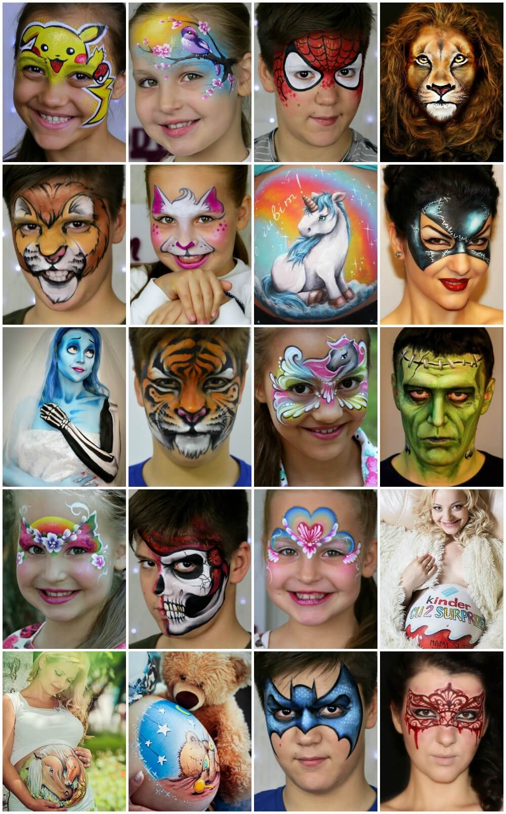
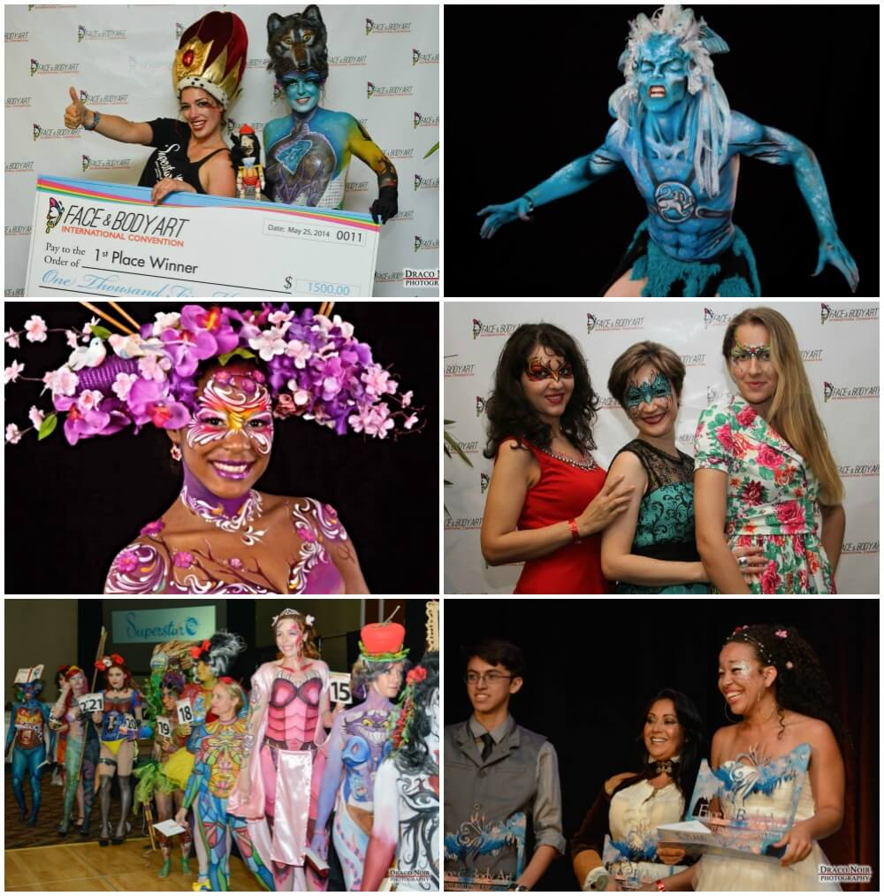
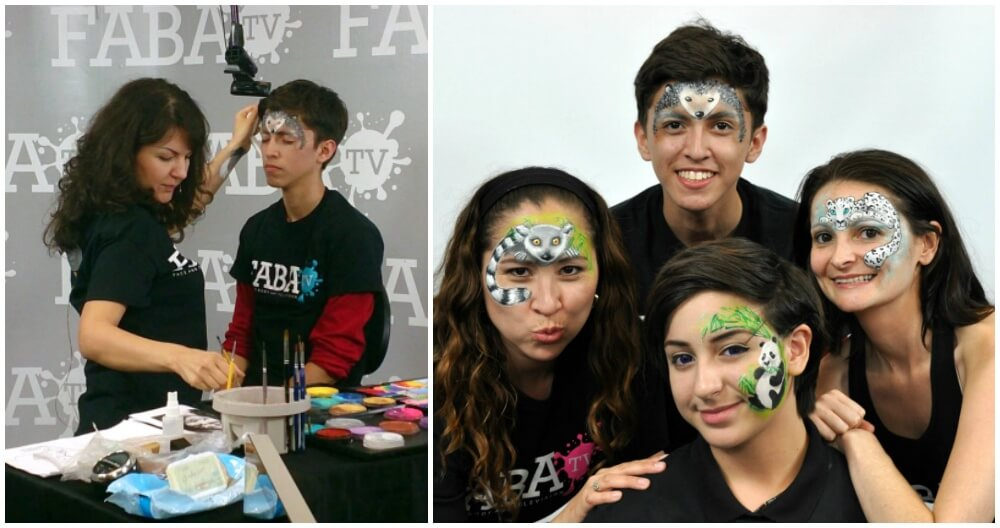
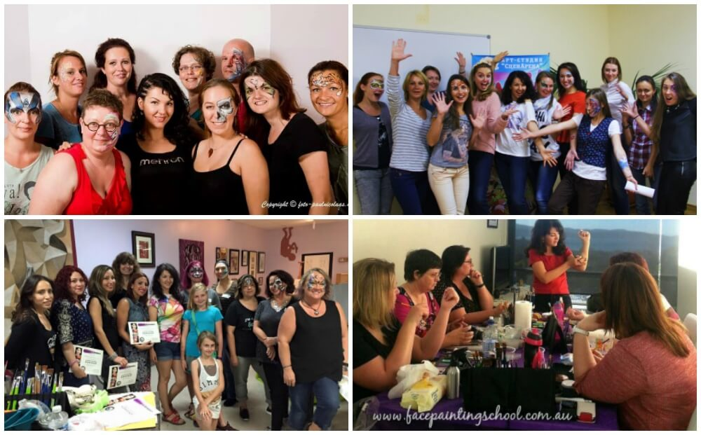
Lekce 2: Profesionální produkty pro face painting a body art
Jako u všeho — pro nejlepší výsledky potřebujete kvalitní produkty a nástroje. Používání nekvalitních produktů vás může zklamat, nebo — co hůř — může způsobit podráždění pokožky. Doporučujeme vyhledat specializované dodavatele.
Pamatujte: profesionální barvy na obličej a tělo se jen zřídka najdou v hobby marketech nebo diskontních obchodech. Na eBay nebo Amazonu je sice najdete, ale cena bývá vyšší a/nebo kvalita nižší.
Profesionální barvy jsou bezpečné a splňují normy
Profesionální barvy jsou kosmetické produkty — bezpečné pro pokožku, snadno se používají a splňují směrnice FDA, EU a CSPA. Pouze profesionální barvy dají jasné, živé krytí, které nepraská, neloupe se, neteče ani se nerozmazává.
Profesionální barvy na obličej jsou obvykle suché konzistence, dostupné v kelímcích o hmotnosti 30, 32, 40, 45, 60 a 90 gramů — aktivují se malým množstvím vody. Základní složky: voda (aqua), glycerin a/nebo parafín (vosk).
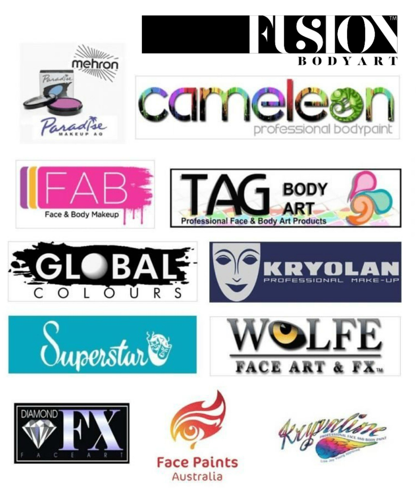
TAG, PartyXplosion, Wolfe FX, Diamond FX, Cameleon, Global Colours, Face Paints Australia, Mehron Paradise, Superstar, Kryvaline, Kryolan, Fusion Body Art, Kraze FX, Dimart.
Jak číst etiketu barvy:
Hledejte označení „kosmetický produkt" / „make-up" / „pro face a body art". Dále číslo šarže (lot number) pro sledovatelnost, certifikační značky CSPA, FDA, EU, a značku Cruelty-free.
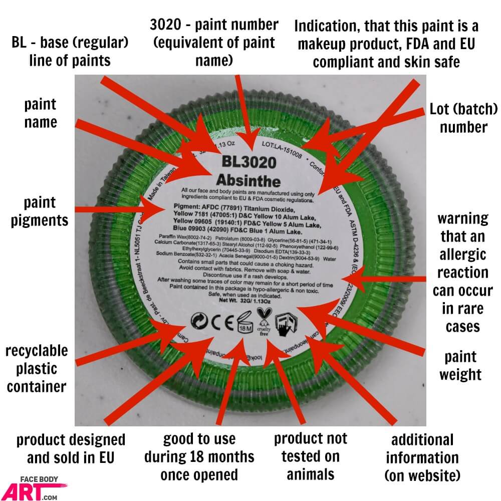
Veganské, cruelty-free nebo přírodní?
Většina profesionálních značek je veganská a žádná se netestuje na zvířatech. Ne-veganské značky obsahují lanolín, karmín, včelí vosk nebo šelak.
Fusion Body Art, Global Body Art, Diamond FX, TAG Body Art, Cameleon, Wolfe FX Paradise, Kryvaline.
Přírodní a veganské barvy NEJSOU totéž. Přírodní barvy bývají mdlé, mastné a často obsahují včelí vosk (nejsou veganské). Hůře se s nimi pracuje na detailech a pro profesionální použití se většinou nehodí.
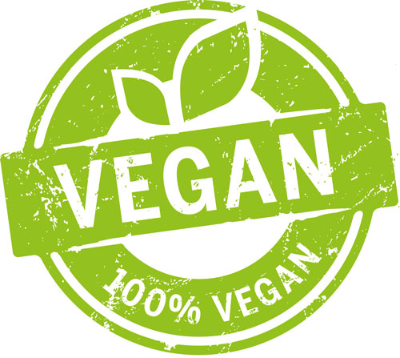
Lekce 3: Z čeho se skládá výbava face paintera?
Kompletní výbava face paintera se skládá z:
- Běžné barvy (jednotlivé barvy nebo paleta 12 barev: vosková bílá, glycerinová bílá, vosková černá, červená, oranžová, žlutá, světle zelená, tmavě zelená, světle modrá, tmavě modrá, růžová, fialová)
- Metalické barvy (zlato, stříbro, metalická bílá)
- Neonové barvy (růžová, žlutá, zelená)
- Split-cakes pro houbu (duhové a další kombinace)
- Split-cakes pro one stroke (zelená kombo, modrá kombo, růžová kombo atd.)
- Kulaté štětce — dvě sady velikostí #1–#6 (jedna jen na bílou, druhá na ostatní barvy) + #3 a #4 na černou
- Šikmé (angled) štětce — sada tří velikostí: ½, ⅝, ¾
- Ploché (flat) štětce — sada tří velikostí: ½, ¾, 1 palec
- Filbert štětce — velikost ½ (10 mm), ¾
- Blending štětce — sada dvou (Cameleon, Bolt Firm blender nebo make-up štětec)
- Houby (sponges)
- Nádoba na štětce (brush tub)
- Rozprašovač (spray bottle)
- Glitry (kosmetický glitter, glitter gel, chunky glitter)
- Šablony (stencils) — BAMS, Diva, Graffiti Eyes, PBA
- Kamínky (gems)
- Vlhčené ubrousky (nejlépe bio/organické)
- Pouzdro na štětce, kufřík na barvy, velký kufr na vše
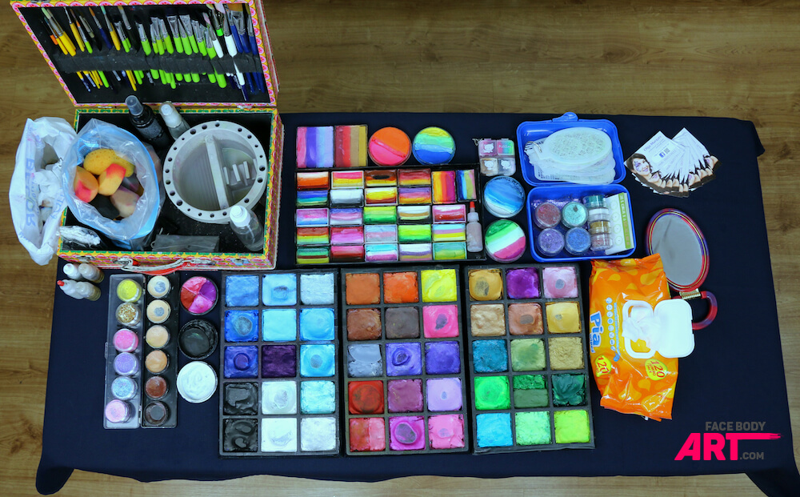
Vaše profesionální výbava se bude proměňovat s tím, jak budete rozvíjet svůj styl. Barvy a nástroje, které používáte, se budou výrazně lišit v závislosti na technikách, které preferujete. Někteří umělci malují převážně štětci, jiní používají jen one stroke, a další preferují houby a pouze pár kulatých štětců na obrysy.
Předpřipravené kity:
Škola nabízí dva hotové kity ve spolupráci s JestPaint.com — Beginner's Kit (základní startovní sada) a Professional's Kit (kompletní profesionální sada). Můžete také prozkoumat startovní kity, které nabízejí mnohé face painting obchody.
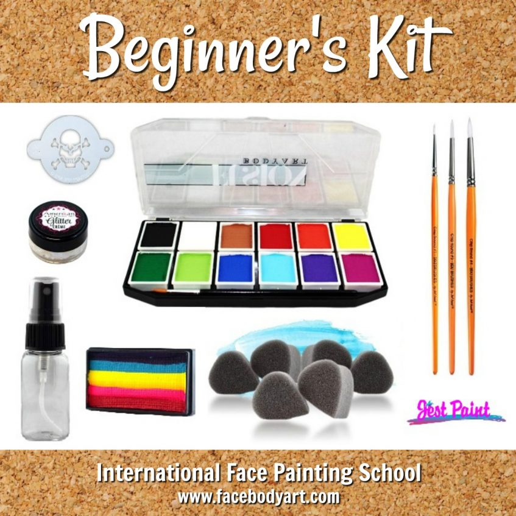
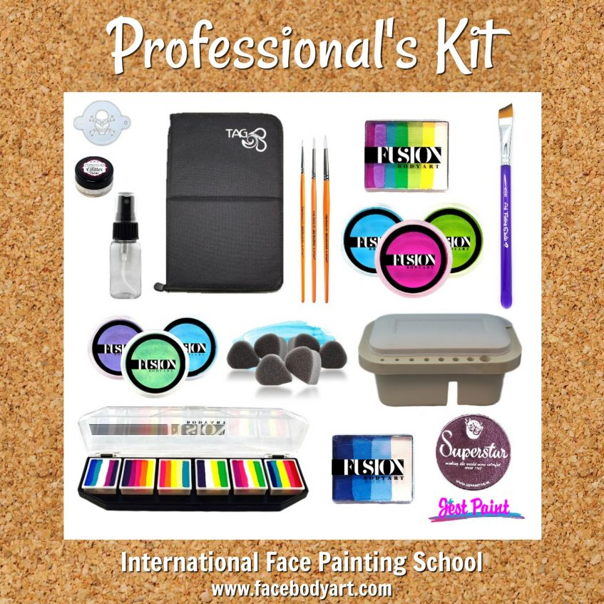
Lekce 4: Alergické reakce a bezpečnost
Přestože je počet alergických reakcí na kvalitní barvy relativně nízký, vždy existuje malé riziko. Dle US Dermatology Association asi 10% populace zažije alergickou reakci na kosmetiku alespoň jednou.
Cameleon, TAG, Wolfe FX, Diamond FX, Kryolan, Global, Face Paints Australia, Mehron, Superstar, Kryvaline, Fusion Body Art. Žádná značka však nedává 100% záruku. Certifikaci podléhá pouze pigment, ne celý produkt.
Jak rozpoznat alergickou reakci:
Nejzávažnější reakce nastávají ihned po kontaktu. Pozdější reakce (po hodinách) bývají méně závažné. Dva kontrolní body:
1) Během malování: Barva samotná nebo jiný produkt na kůži — dítě si stěžuje na pálení, svědění či nepříjemné pocity při malování.
2) Při odstraňování: Nesprávné odstraňování barvy je hlavní příčina podráždění. Důležité je informovat rodiče o správné péči: mají používat jen jemné mýdlo, teplou vodu a olej. Nepoužívat scrub ani alkohol!
Hygiena a prevence:
Udržovat materiály čisté, často měnit oplachovací vodu, nepoužívat stejnou houbu na různé děti. K sanitaci vody: Brush Bath (SillyFarm) nebo Brush Spa (Face Paints Australia). Ostatní dezinfekce ztrácí účinnost ve vodě. Nepřidávat alkohol ani bělidlo do oplachovací vody!
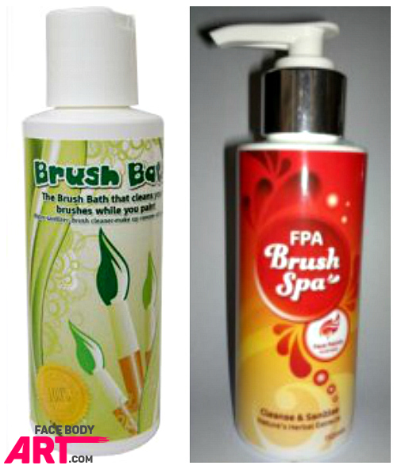
Tři skupiny příčin podráždění kůže:
- Individuální intolerance nebo zdravotní stav dítěte
- Jiné produkty na kůži (ubrousky, mýdlo, krém)
- Alergické složky v barvě
Co dělat při stížnosti:
Nepanikařit, klidně analyzovat příčiny, kontaktovat výrobce s číslem šarže, doporučit rodiči konzultaci s lékařem, dokumentovat vše.
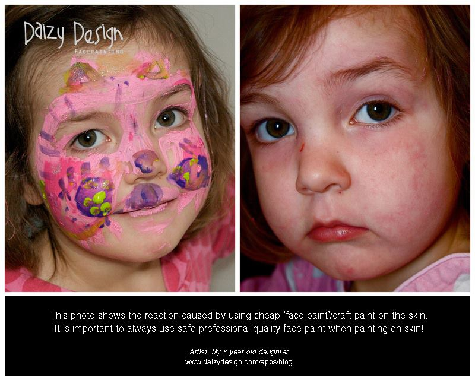
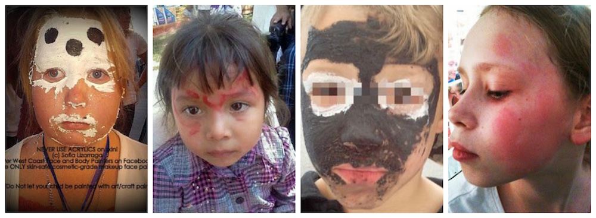
Koho NEMALOVAT — kontraindikace:
Nemalovat děti s infekčními nemocemi (chřipka, herpes, plané neštovice), alergiemi, poškozenou kůží, aktivním astmatem či otevřenými ranami. Nedoporučuje se malovat alergiky a teenagery s rozsáhlým hnisavým akné.
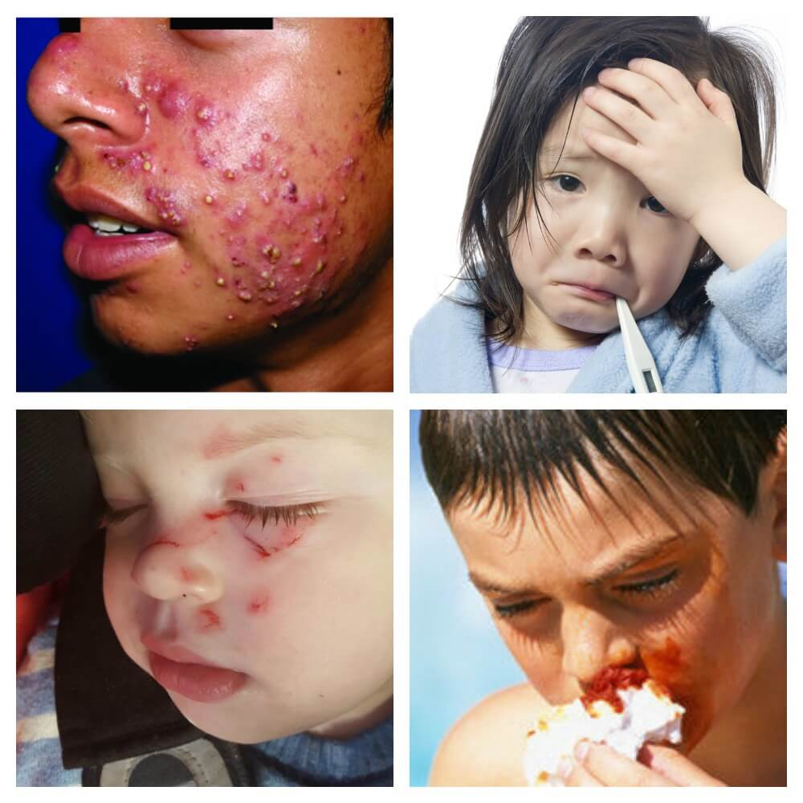
Lekce 5: Bezpečnost a hygiena v době COVID-19
Tři úrovně čistoty — jaký je rozdíl:
1. ČIŠTĚNÍ (1. úroveň): Všechny povrchy lze čistit.
Štětce: Mýdlo + teplá voda, pak namočit v 70% alkoholu na 5 minut. Alternativně ponořit do vroucí vody na 3 minuty. Nebo použít Brush Bath spray.
Houby: Ručně mýdlem nebo v pračce, pak sušička na vysoký teplo.
Barvy: Postříkat 70% alkoholem, nechat 5 minut, otřít (ne příliš často — ničí antimikrobiální vlastnosti).
2. DEZINFEKCE (2. úroveň): Pouze neporézní povrchy!
Kit, kovové/plastové části, stencily. Ruce, kůži, štětce, houby, barvy NELZE dezinfikovat. Použít 70% alkohol = 5 minut, nebo bělidlo = 10 minut. NEPOUŽÍVAT bělidlo, čpavek nebo Barbicide v blízkosti dětí!
3. STERILIZACE (3. úroveň): U face paintingu nedosažitelná — vyžaduje autokláv.
Bezpečnější postupy v provozu:
- Čistá plocha — nekreslit nemocné děti, mít ceduli s upozorněním
- Čistící stanice pro klienty (rozprašovač, ubrousky, dezinfekce na ruce)
- Re-dipping minimalizovat — naložit štětec hodně barvou (jen jeden ponor)
- Fresh houby per klient per barva (nové houby na nové barvy)
- Oplachovací voda: Brush Bath, jednorázové papírové kelímky, 3-kroková oplachová metoda (čistá voda, špinavá voda, alkohol 70%)
- PPE (osobní ochranné prostředky): rouška, štít, rukavice — ale správně (měnit po každém klientovi)
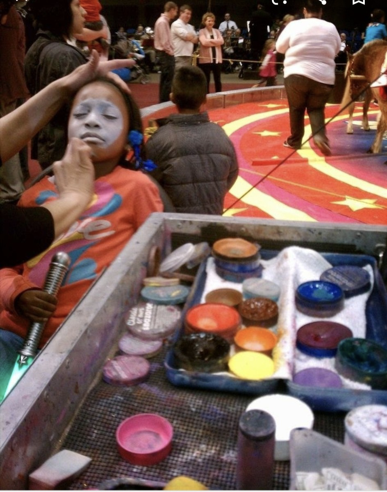
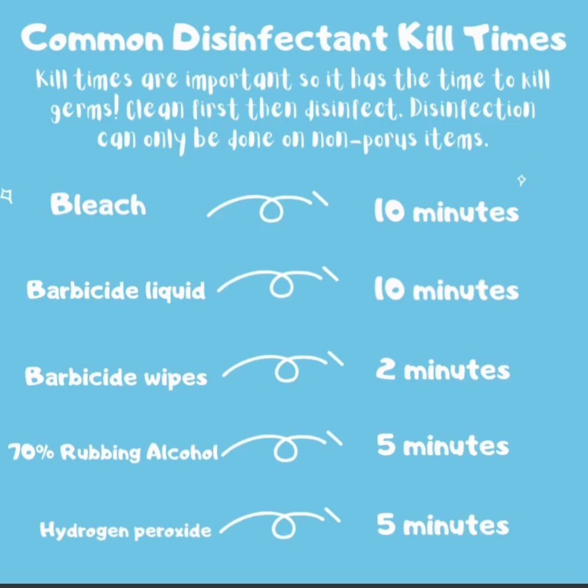
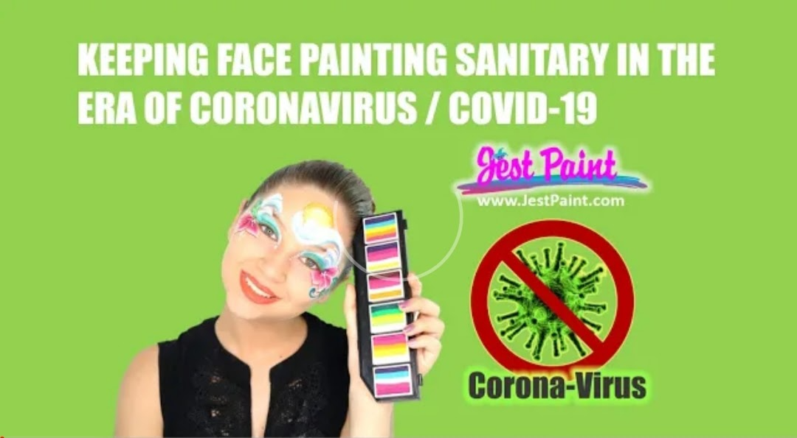
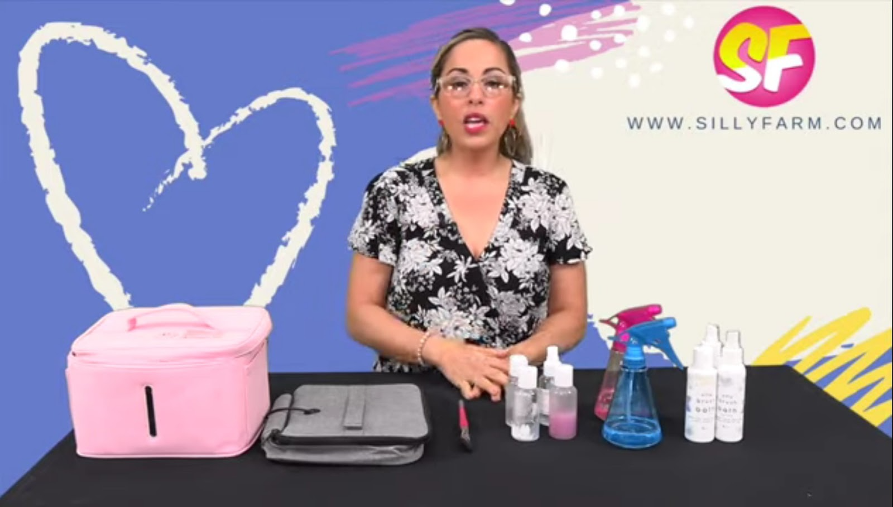
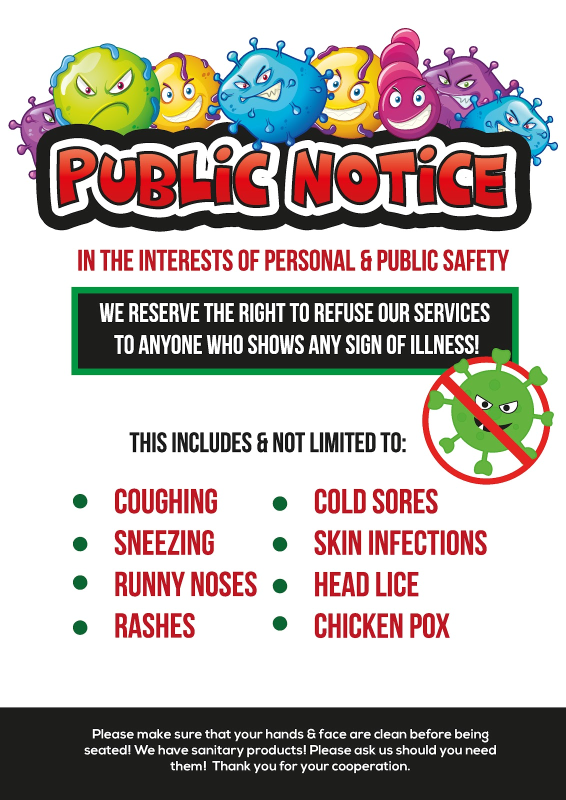
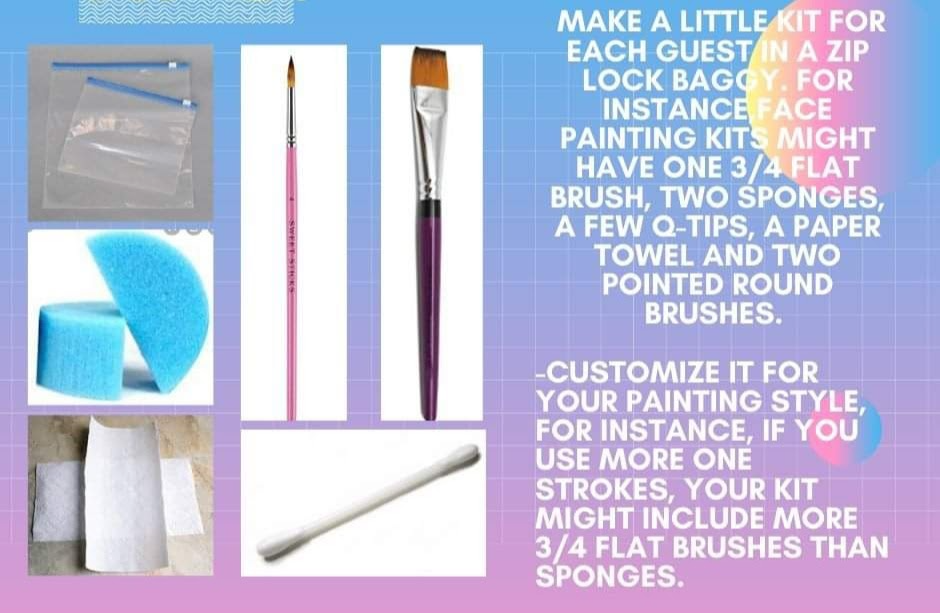
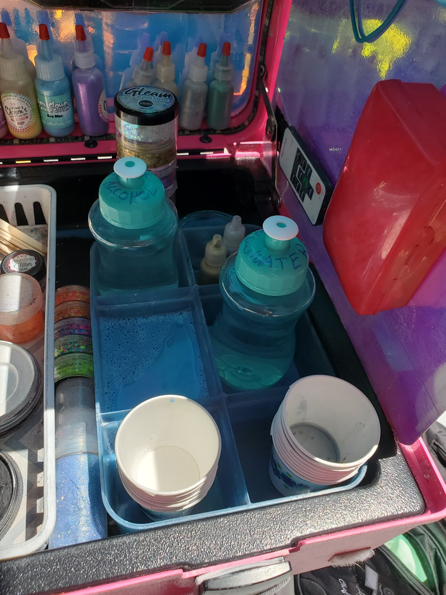
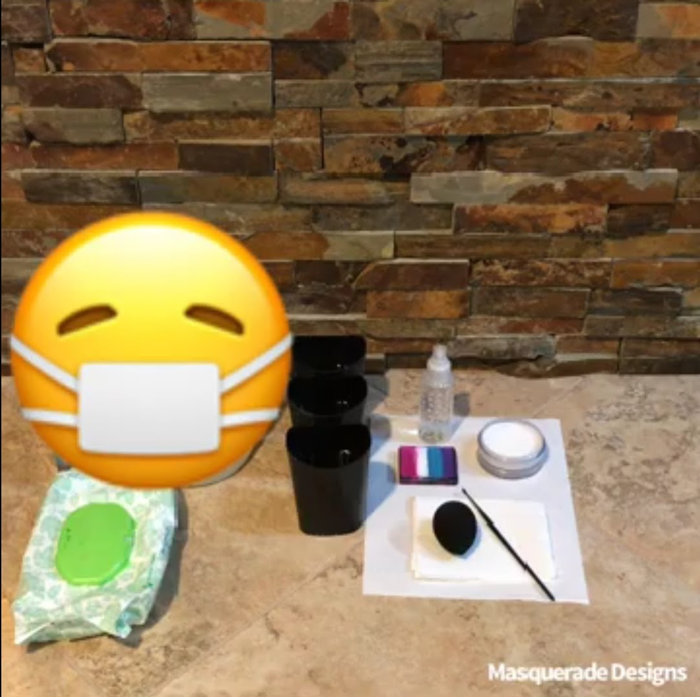
Lekce 6: Hygienické malování rtů
Jako face painter budete často malovat rty. Je důležité dodržovat přísná hygienická pravidla, aby nedošlo k přenosu infekce.
Pravidla pro malování rtů:
- Mít oddělený kelímek s barvou jen na rty (nebo nahradit běžnými rtěnkami)
- Používat jednorázové aplikátory na rtěnku nebo vatové tyčinky (Q-tips). Aplikátory jsou praktičtější a hygieneičtější.
- NIKDY nenamáčet použitý aplikátor zpět do barvy! Jednoduché pravidlo — jeden aplikátor = jeden client = do koše
- NIKDY nenamáčet štětec nebo houbu do barvy na rty! Riziko krížové kontaminace
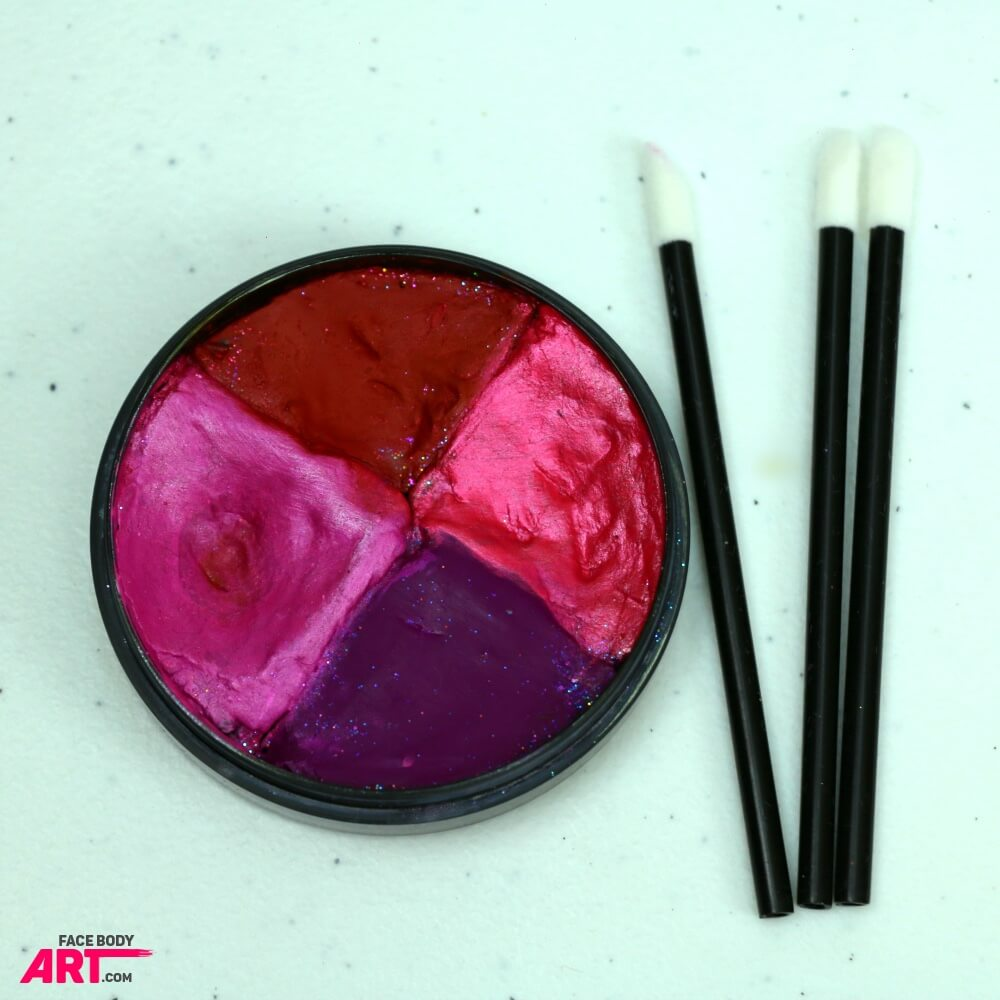
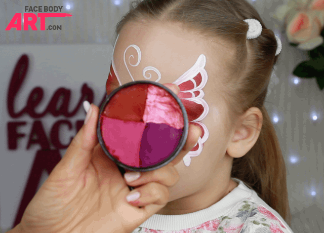
Lekce 7: Jak odstranit barvy z pokožky
Barvy na obličej jsou na vodní bázi = snadno se rozpouštějí v mýdlové vodě. Ale špatné odstraňování může vést k podráždění nebo zbarvení pokožky.
Správný postup odstraňování barev — 7 kroků:
- NEZAČÍNAT vodou! Voda smyje jen vrchní vrstvy, pigment se nerozlomí a může se vtlačit do pórů. Začít mýdlem!
- Tekuté nebo tuhé mýdlo + pár kapek vody
- Masírovat prsty do blátivy konzistence
- Otřít vlhčeným ubrouskem, odličovacím ubrouskem nebo navlhčeným papírovým ručníkem
- Opláchnout teplou vodou
- Opakovat kroky 2–5, pokud je nutné
- Na odolné skvrny: jemný olej bez vůně (kokosový, olivový)
Proč dochází k zbarvení:
- Oční víčka jsou bohatá na mazové žlázy — tam se pigmenty nejrádě usadí
- Silné pigmenty (voskové modré, tyrkysové, zelené, fialové) zanechávají stopy snadněji
- Glycerinové barvy obvykle nezabarvují
Lekce 8: Kde nakoupit produkty | Exkluzivní slevy
Studenti IFPS mají přístup k seznamu přeprodejců a obchodů po celém světě s exkluzivními slevami. Tyto slevové kódy jsou exkluzivní a je zakázáno je sdílet s ne-studenty.
Obchody dle země:
Certifikovaní prodejci se nacházejí v těchto zemích: Austrálie (6 obchodů), Belgie (5), Kanada (6), Kostarika (2), Francie (2), Německo (6), Maďarsko (2), Izrael (1), Itálie (3), Lichtenštejnsko (1), Mexiko (1), Nizozemsko (6), Nový Zéland (2), Rumunsko (1), Rusko (1), Jižní Afrika (1), Španělsko (3), Švýcarsko (3), Spojené království (12), Spojené státy americké (14).
Sleva a benefity:
Některé obchody nabízejí slevy v rozsahu 5–20% s exkluzivními kódy pro studenty IFPS. Kompletní seznam obchodů, slevových kódů a jejich webových adres vám byl zaslán e-mailem v rámci uvítacího balíčku.
Modul 2 — Tréninkové nástroje a metody. Srovnávací přehled.
Kde a jak trénovat face painting — na sobě, na dětech, na deskách a hlavicích
Lekce 1: Vlastní obličej, paže, nohy a další dostupné části těla
Dobrá zpráva je, že vy sami jste ten nejpohodlnější a nejdostupnější model. Můžete se malovat kdykoli chcete, ve dne v noci, a pokud si fotíte a sdílíte svou práci online nebo na výstavní tabuli, brzy budete rozpoznatelní — váš obličej bude na každém obrázku.
Nepopírám, malovat si vlastní obličej je ze začátku těžké. Ruka se může třást, linie budou hrubé — a navíc pracujete se zrcadlem, takže je vše zrcadlově převrácené. Ale budete překvapeni, jak rychle si ruka zvykne a jak se vaše práce zlepší, pokud budete trénovat pravidelně.
Jeden z nejtěžších úkolů ve face paintingu je vytvořit vyváženou kompozici na obličeji — proto doporučuji trénovat umístění designu na vlastním obličeji. Techniky jako linky, blending, one stroke detaily můžete procvičovat na jakékoli dostupné části těla (ruce, nohy, ramena, boky). Nezapomeňte pak dezinfikovat štětce.
Doporučuji, aby se tento typ tréninku stal vaší hlavní metodou, zejména na začátku. Cvičte každý den nebo alespoň 3–4x týdně a všimnete si, jak rychle se vaše dovednosti zlepší.
Výhody:
- Nepotřebujete model — máte sami sebe 24/7
- Můžete vytvářet designy jakékoli složitosti a nikdy neztratíte trpělivost
- Budete vlastnit „copyright" svých prací s vlastním obličejem na fotkách
- Můžete trénovat tak detailně, jak chcete, a blíže se seznámit s texturou pokožky
- Brzy budete vytvářet vyváženější designy, protože najdete nejlepší umístění na obličeji
- Bonus mistra — klienti jsou vždy překvapeni, když zjistí, že umíte namalovat vlastní obličej
Nevýhody a obtíže:
- Chcete-li mít hezké fotky, musíte myslet i na účes, make-up a úsměv!
- Budete potřebovat někoho, kdo vás vyfotí, nebo se naučit dělat dobré selfie
- Mějte na paměti: pokud tyto fotky použijete v ukázkovém portfoliu, někteří klienti si mohou myslet, že design na dospělém je jen pro dospělé, nebo design na dívce je jen pro dívky (i když je to chlapecký motiv)
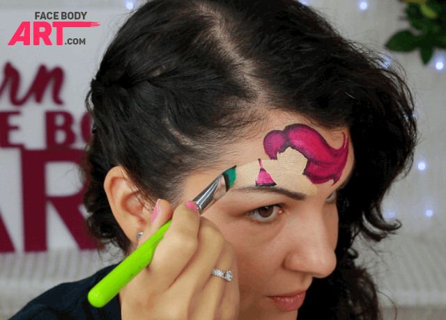
Lekce 2: Děti a modely
Výhody:
- Můžete procvičit design ze správné perspektivy a seznámit se s texturou pokožky a tvarem obličeje
- Naučíte se vyvažovat design tím, že najdete nejlepší umístění na obličeji
- Objevíte různé obličeje a různé rysy — některé děti mají velká čela, jiná malá, a vaše plátno nikdy není dvakrát stejné
- Malování živého modelu, který se může vrtět, být neklidný, znuděný nebo unavený, je nejen skvělý trénink, ale je to přesně ta práce, kterou budete dělat! Časem se naučíte, jak nejlépe komunikovat s malými dětmi
- Máte možnost budovat portfolio s novými designy na různých obličejích. Většinou si dítě vybere konkrétní design, protože se mu (podvědomě) líbilo, jak model vypadal na fotce. Mít fotky namalovaných dětí je proto zásadní pro vaše portfolio. Ujistěte se, že máte jasnou dohodu s rodiči o použití fotek
Nevýhody a obtíže:
- Najít správný model, domluvit čas a místo může trvat déle, než čekáte. Ale jakmile si vytvoříte okruh modelů, půjde to rychle
- Na začátku může být těžké najít model — začněte s příbuznými, přáteli, sousedy, nebo dejte inzerát na sociální sítě. Ze zkušenosti vím, že se vždy najdou rodiče, kteří rádi přivedou dítě na bezplatné malování. Navíc rodiče sdílejí fotky vaší práce na svých profilech — skvělá reklama!
- Ideálně by design, který budete malovat na model, měl být předem nacvičený — zejména u malých dětí, které mají omezenou trpělivost
- Je důležité najít fotogenický, výrazný a sebejistý model. Ne všechny děti se umí usmívat a uvolnit před kamerou, zvláště s cizím člověkem. Pracujte s různými dětmi a postupně si vybudujete vlastní databázi oblíbených modelů
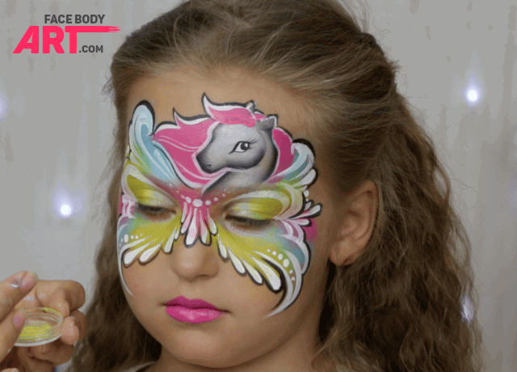
Lekce 3: Tréninkové desky
Výhody:
- „Vyzkoušení" umístění a kompozice designu před malováním na 3D obličej
- Dáte své pokožce odpočinek od make-upu
- Dostupnost 24/7
- Plastové tréninkové desky se většinou nezbarvují a barva se snadno setře vlhčeným ubrouskem
- Můžete si vyrobit vlastní desky — vytisknete obrázek obličeje a zalaminujete ho. Doporučuji matnou laminaci, aby se štětec neklouzal
- Desky lze použít i jako ukázkové tabule na tematických akcích
Nevýhody a obtíže:
- Dodatečná investice do tréninkových nástrojů
- Povrch může být kluzký a nepřipomíná pokožku. Tip: používejte méně vody. Některé techniky nelze na plastové desce procvičit (např. double dip květinové lístky)
- Ploché desky neumožňují zažít trojrozměrný tvar obličeje — nepochopíte, kde může být na skutečném dítěti obtížné namalovat detail (děti se hýbou, nenechají vás malovat na víčko)
- Fotky designů na plochých deskách nevypadají tak atraktivně jako na skutečných lidech
Na trhu existují dva typy desek: průsvitné desky a barevné desky. Průsvitné desky vytvořily Sally-Ann Lynch a Sarah-Jane Janakovich a jsou na trhu již několik let. Barevné desky byly uvedeny v roce 2019.
Dvě velké firmy vyrábějí barevné desky: Sally-Ann přidala barevnou řadu do své kolekce Training Tried & Tested Wipeable, a druhou velkou firmou je Sparkling Faces od Svetlany Keller. Barevné desky umožňují face painterům dosáhnout mnohem hezčího výsledku! Designy na barevných deskách vypadají realističtěji — kontrast mezi odstínem pleti a barvami vytváří lepší představu o tom, jak bude design vypadat na skutečném obličeji.
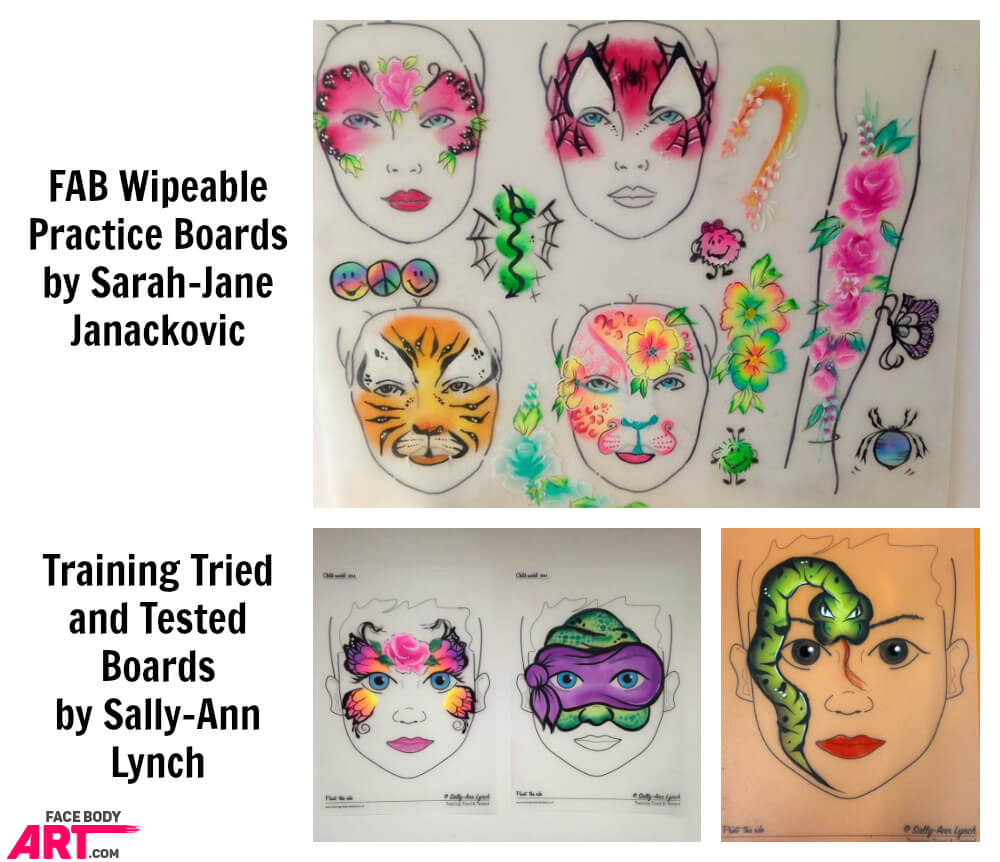
Můžete si také stáhnout školní šablony obličejů pro tréninkové podložky. Vytiskněte je a zalaminujte, nebo je použijte s průhlednou deskou od Sally-Ann:
- 1 — Celý obličej
- 2 — Levý poloprofil
- 3 — Pravý poloprofil
- 4 — Jednoduchý obličej s oční linkou
- 5 — Jednoduchý obličej se zavřenýma očima
- 6 — Šablona pro těhotenské malování bříška
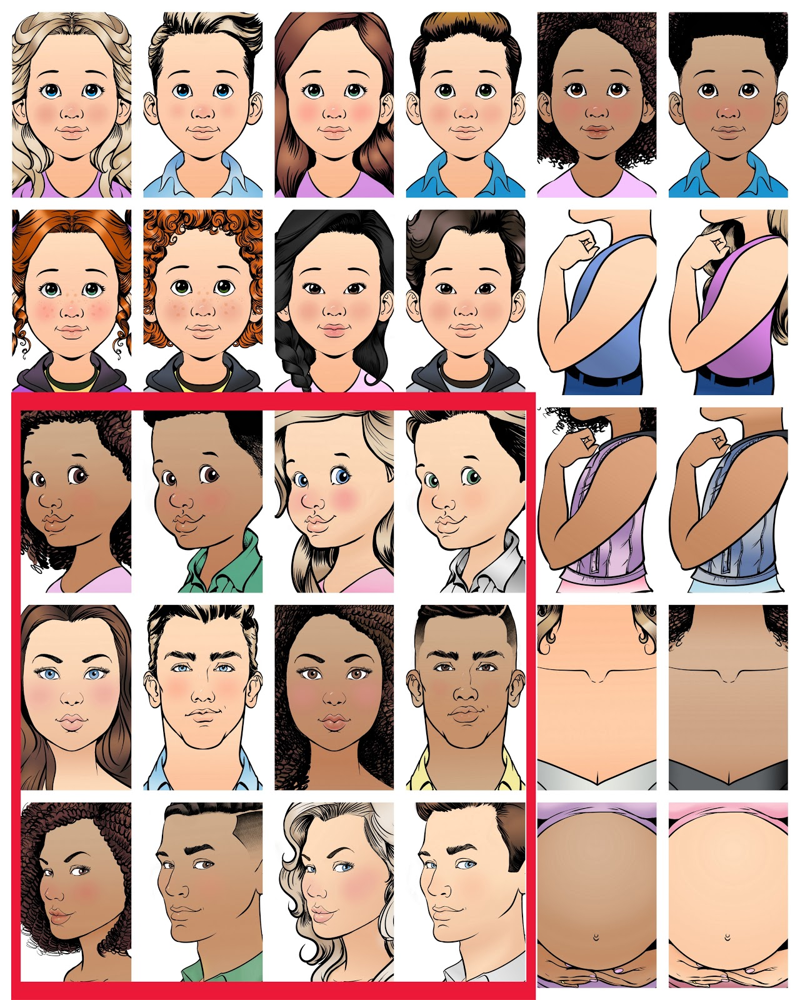
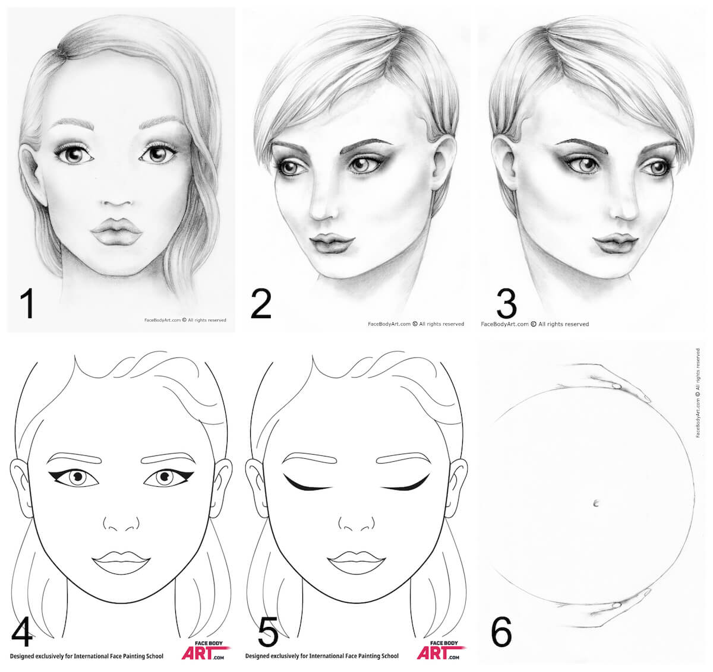
Další typ desek, který stojí za zvážení, jsou černobílé desky. Černá je skvělá na procvičování linek a one stroke, bílá slouží jako cedule na akci s čistou zadní stranou pro trénink. Obě vyvinula Sally-Ann Lynch.
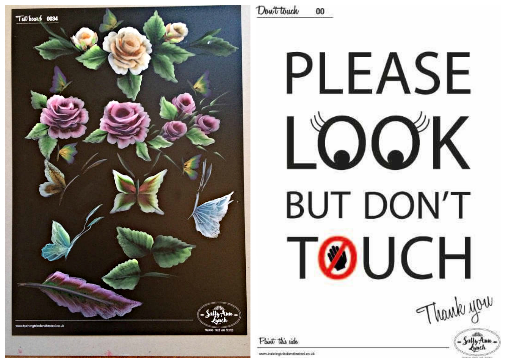
Lekce 4: Tréninkové podložky a hlavice
Výhody:
- Některé jsou vyrobeny ze silikonu a mají podobnou texturu jako pokožka
- Hlavice jsou trojrozměrné — dávají vám šanci procvičit umístění a vyvážení designu
- Možnost dát vlastní pokožce odpočinek od make-upu
- Dostupnost 24/7 — nikdy neřeknou ne!
- Můžete procvičit širokou škálu technik
Nevýhody a obtíže:
- Dodatečná investice do tréninkových nástrojů, které nemusí být snadno dostupné
- Silikon absorbuje pigmenty snadněji než pokožka — odstranění skvrn může být problematické, zejména u silných pigmentů (tmavě zelená, červená atd.)
- Silikon je v pořádku, ale zatím neexistuje žádný umělý povrch, který by dokonale napodobil lidskou pokožku
- Fotky namalovaných hlavic nevypadají moc atraktivně v portfoliích — nedoporučuji je používat v reklamě
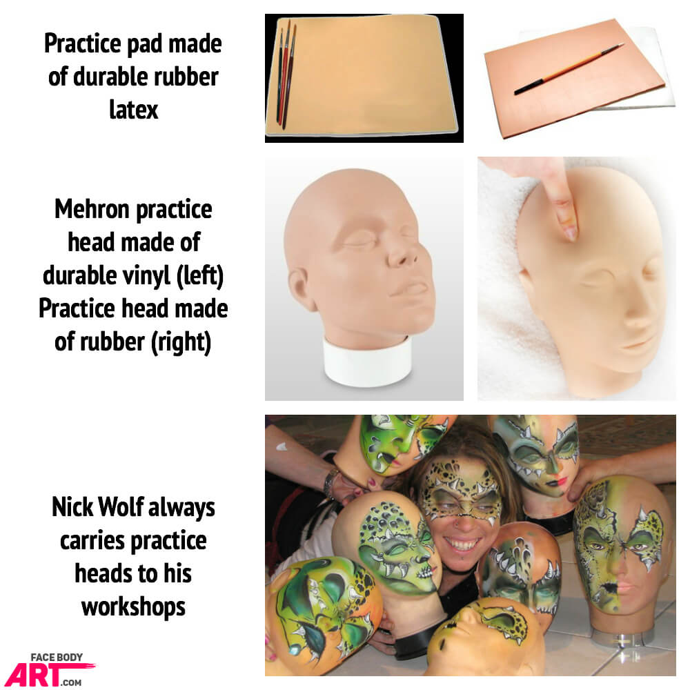
Lekce 5: Jak vyčistit zabarvenou tréninkovou hlavici
Prevence zabarvení: Před malováním nastříkejte hlavici lakem na vlasy. Nechte sprej důkladně zaschnout mezi vrstvami a před malováním. Tím vytvoříte bariérovou vrstvu, která zabrání pronikání barvy do gumy.
Další možností bariérové vrstvy je Mod Podge Glue. Naneste ho na hlavici, nechte zaschnout, namalujte design, a když je hlavice zabarvená, jednoduše sloupněte vrstvu a začněte znovu.
Pokud jste nepoužili žádnou bariéru:
- Umyjte hlavici ihned po dokončení malování
- Začněte čištění tekutým mýdlem, NE vodou! Voda zdá se fixuje barvu na plastikovém/silikonovém povrchu při prvním opláchnutí
Dva nejúčinnější postupy čištění:
- Vodní roztok eukalyptového oleje + mikrovláknová houbička (jako Magic Eraser Sponge / Gala Rub Out Sponge)
- Izopropylalkohol nad 90% + Mr. Clean Magic Eraser
Můžete také vyzkoušet speciální čistič štětců (Brush Cleaner), který jedna ze studentek doporučila jako skvělé řešení pro odstraňování skvrn z tréninkové hlavice. Zatím se prodává pouze v Evropě.
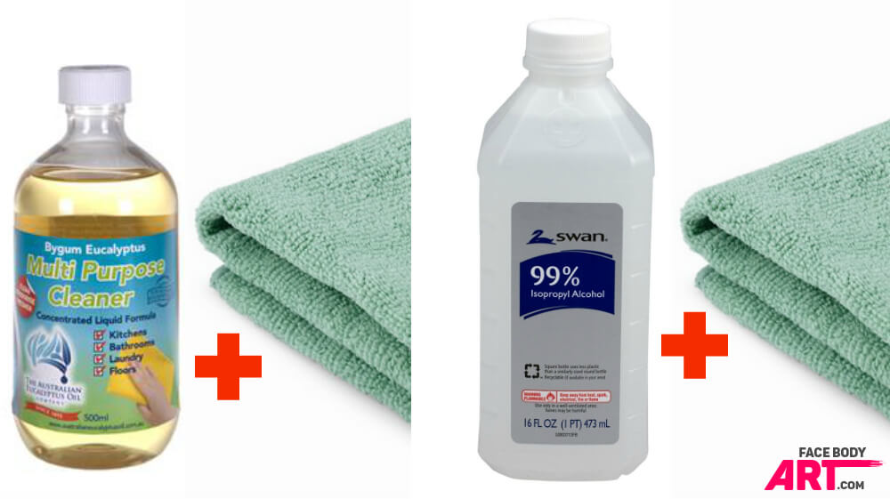
Modul 3 — O barvách na obličej. Přehled, porovnání a doporučení.
Typy barev, značky, split-cakes, palety a výběr odstínů
Lekce 1: O barvách na obličej
Tolik značek, tolik barev, tolik typů — to všechno může být při začátku přehlcující. Tato lekce vám osvětlí tajemství barev na obličej a tělo.
Tři kategorie barev na vodní bázi pro obličej a tělo:
1. Barvy na bázi parafínu:
Parafín je na petroleji založená látka, která je v pokojové teplotě tuhá a roztavuje se nad 37°C. Je veganská (pochází z petroleje). Konzistence se podobá modelíně — barvy rychle schnou, mají velmi dobrou krytost a jsou skvělé pro jemné detaily a linky. Nevýhodou je, že kvůli suché struktuře se obtížněji blendují (míchají na pokožce).
2. Barvy na bázi glycerinu:
Glycerin je viskózní kapalina ze zdrojů rostlin (veganská). Je měkčí než parafín a stabilnější v teple — při extrémních teplotách se změní na krém, zatímco parafín se stane lepkavý jako marshmallow. Skvělé pro měkké, hladké podklady — velmi flexibilní a mísitelné. Neparají se a nešupí se. Mírně se snadněji rozmazávají, s více matným vzhledem. Speciální poznámka: Mehron (Paradise) je ideální pro houbičky a filbert štětce, ale linie mohou být těžší. Superstar má elastičtější strukturu — vhodná pro houbičky i linie.
3. Barvy na bázi gumového stromu (Acacia Senegal gum):
Přírodní guma ze stromů, veganská. Konzistence je někde mezi voskem a glycerinem — lze ji používat na linie jako vosk, lesklá povrch, odolná vůči třepání jako vosk, ale ne tak odolná vůči teplotě.
Každá značka má tři kategorie barev: normální/základní, metalické/perlové a neonové barvy.
Neonové barvy: Obsahují složku reflektující UV světlo, která se v tmě jeví jako zářící (potřebují černé světlo). Sušší struktura, potřebují více vody. S štětcem často vypadají bledě — lépe fungují s houbičkou. Tip: Neonovou barvu několikrát nastříkejte vodou, dejte čas na aktivaci, znovu nastříkejte a znovu aktivujte štětcem nebo houbičkou, dokud se nestane krémovitá. Nejčastěji používané neonové barvy pro běžné použití jsou: žlutá, oranžová, růžová, zelená. Tmavé neony (modrá, purpurová) stojí za to jen pod UV světlem.
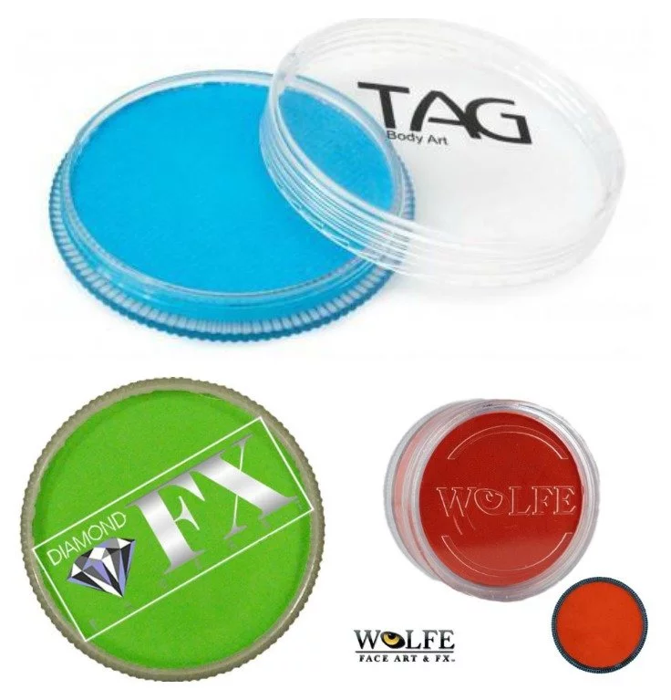
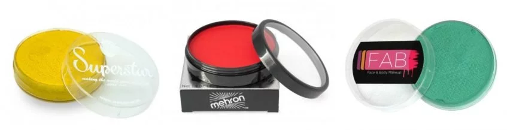
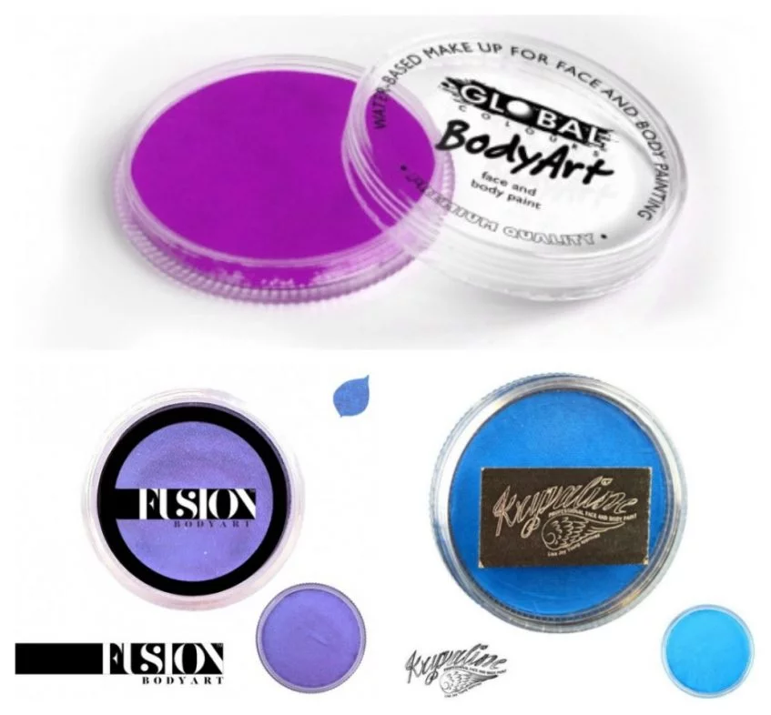
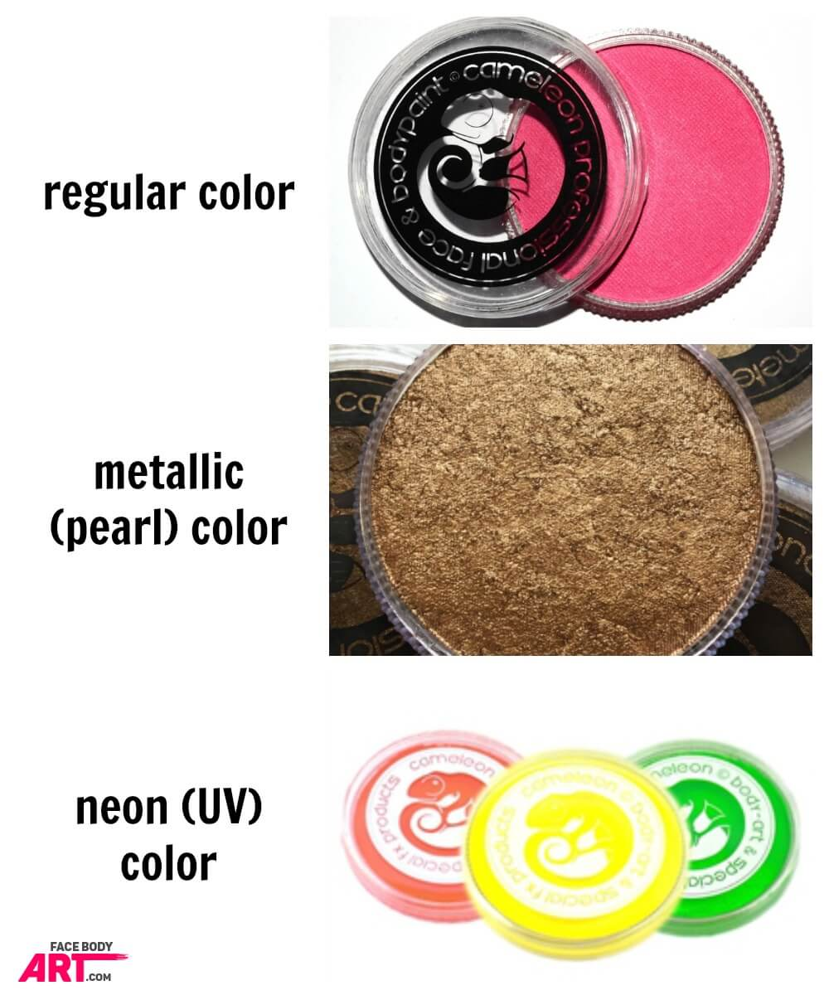
Lekce 2: Bílá barva
Nejlepší bílá na linie: Barvy na bázi parafínu a Acacia Senegal gum pracují nejlépe. Značky: Fusion Body Art, Wolfe FX, Diamond FX, Kryvaline (normální), PartyXplosion, Face Paints Australia, Cameleon, Kraze FX. TAG a Global bílá mají mírně odlišný vzorec — méně problémů se měkkostí pro některé umělce, ale někdy nejsou tak kryjící.
Nejlepší bílá na podklady: Barvy na bázi glycerinu pracují nejlépe. Doporučujeme Paradise (Mehron), FAB (Superstar) nebo Kryolan. Kupte si zálohu — budete jí potřebovat hodně. Měkčí struktura, lépe se míchá, působí lehčeji. Dokonalá pro houbičku nebo filbert štětec, ale linie nejsou tak rovné/kryjící jako u vosku. Paradise má lehký kokosový olej a s vůní kakaa — uklidňuje malé děti, když se nanáší na horní ret.
Metalická (perlová) bílá: Pro houbičky a přechody mezi barvami v split-cakes nebo na pokožce. Jakákoli kvalitní metalická bílá postačí.
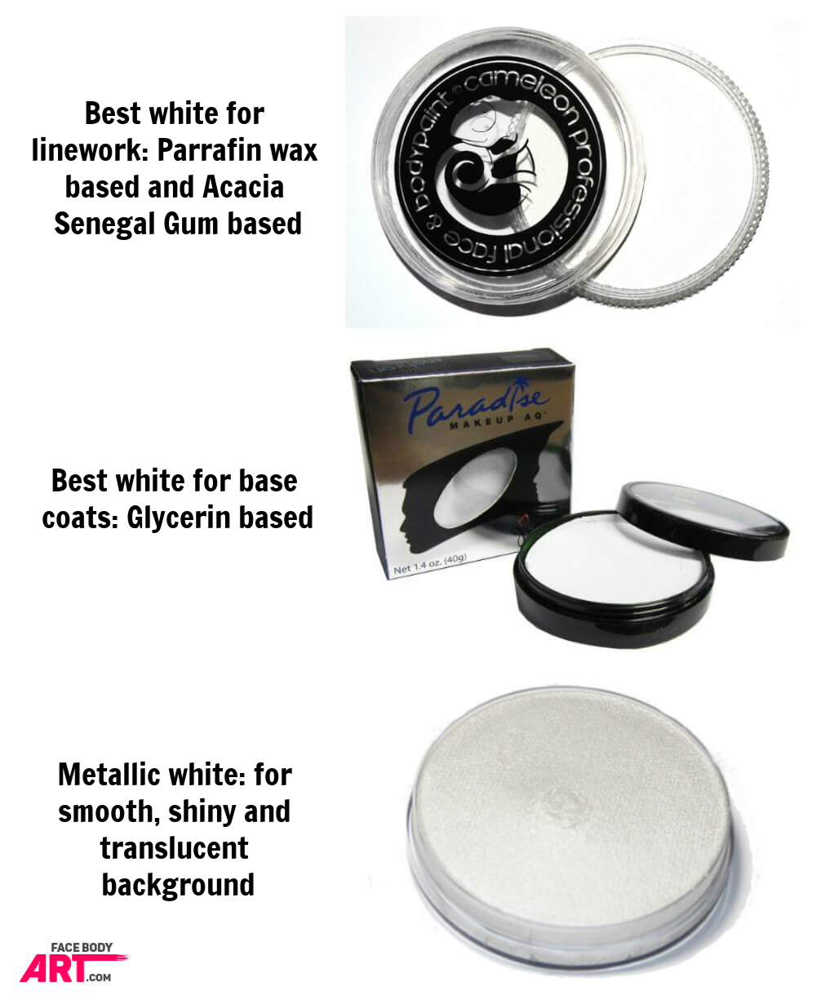
Lekce 3: Černá barva
Nejlepší černá na linie: Pro obrysování a nejtmavější stíny. Často se používá — kupujte v největších obalech (45g, 90g nebo pár 32g). Vždy mějte zálohu. Používají se zejména vosky a Acacia Senegal gum. Každý umělec jí používá více nebo méně podle svého stylu. Vosková černá je velmi krycí a obtížně se míchá na pokožce (silný pigment) — nedoporučuji se s ní učit blendování. Jakákoli kvalitní značka postačí — rozdíly v krytosti a sytosti jsou minimální.
Nejlepší černá na podklady: Pro houbičky, měkké stíny a zakrytí víček. Doporučujeme glycerinové — Paradise (Mehron) nebo Superstar černá. Měkčí, méně pigmentované než voskové — snazší míchání. Skvělé pro velké plochy a měkké stíny. Glycerinová černá je více matná, zatímco vosková černá má lesklý povrch.
Metalická (perlová) černá: Pro houbičky a mísitelný obrys. Používejte pro měkký grafitový obrys smíšený s mísícím štětcem — měkký stín efekt. Lehčí než ostatní černé, měkká struktura, snadno se míchá — malé množství pigmentu ji činí skvělou pro začátečníky, kteří se učí blendovat. Také skvělá pro perlový pozadí, které vypadá jako lesklá noční obloha, když si jej posypete třpytkami.
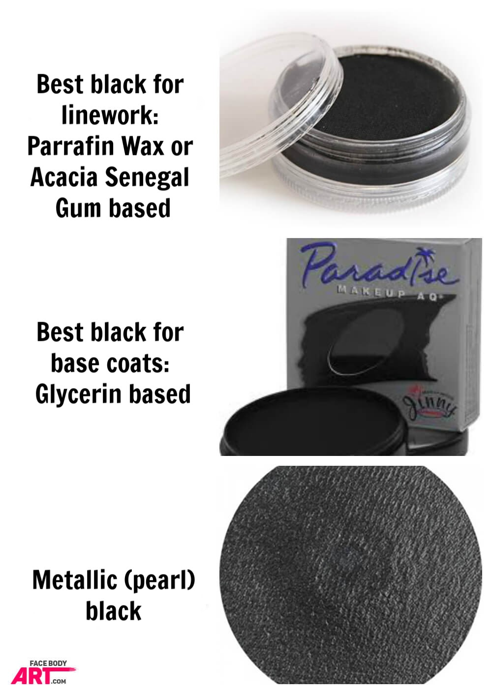
Lekce 4: Split-cakes a technika one stroke — obecný přehled
Přehled terminologie:
ONE STROKE: Malovací technika, kdy umělec najednou načte více barev na štětec, čímž vytvoří vícebarvé/vícedimenzionální efekty jedním tahem (plochý, šikmý nebo filbert štětec). Je to také možné s houbičkou.
SPLIT-CAKES: Kelímky obsahující více než jednu barvu, umožňují načíst více barev na jeden štětec nebo houbičku.
Vyrábějí se ve velkých obalech (pro houbičku a štětec) a v malých úzkých (pro štětec).
Kdo vyrábí co:
- Fusion — „Split cakes" 30g pro štětec, čtvercové „Rainbow cakes" 50g pro houbičku
- Cameleon — „ColorBlocks" 30g pro štětec, čtvercové „BodyBlocks" 90g pro houbičku
- TAG — „One Stroke Cakes" 30g pro štětec, čtvercové „Base Blenders" 50g pro houbičku
- Mehron — „Prisma Cakes" 90g pro houbičku (lze také pro štětec)
- SillyFarm — „Arty Cakes" 30g pro štětec, FAB „Rainbow Cakes" 90g a kulatá 45g pro houbičku
- Global — čtvercová „Rainbow Cakes" 50g pro houbičku, „Fun Strokes" 30g pro štětec
- Wolfe FX — kulatá „Rainbow Cakes" 45g pro houbičku
- Diamond FX — split-cakes 30g pro štětec, čtvercová 50g pro houbičku
Top 5 velkých split-cakes pro houbičku:
- Modrá kombinace pro zimu/Frozen/oceán: Fusion Frozen Shimmer 50g
- Zelená kombinace pro mořské panny/draky: Fusion Mermaid Splash 50g
- Korálová-červená pro tropické/draky/tygry: Fusion Tropical Tiger 50g
- Růžová-purpurová pro jednorožce/princezny: Silly Farm Purple Sprite 50g
- Duha pro milovníky duhy: Fusion Bright Rainbow 50g
Malé split-cakes pro štětec: Doporučuji Fusion Spectrum Palette Tropical Collection od Leanne Courtney. Nebo jednotlivá neonová duha: Fusion Split Cake Leanne's Rainbow (neon) 30g — jasná, pestrobarevná, vytváří spoustu designů se JEDNÍM split-cakem.
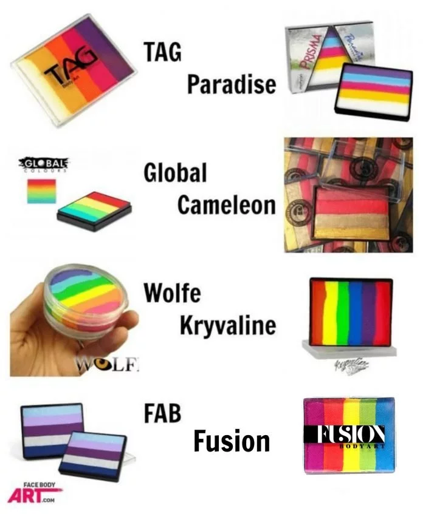
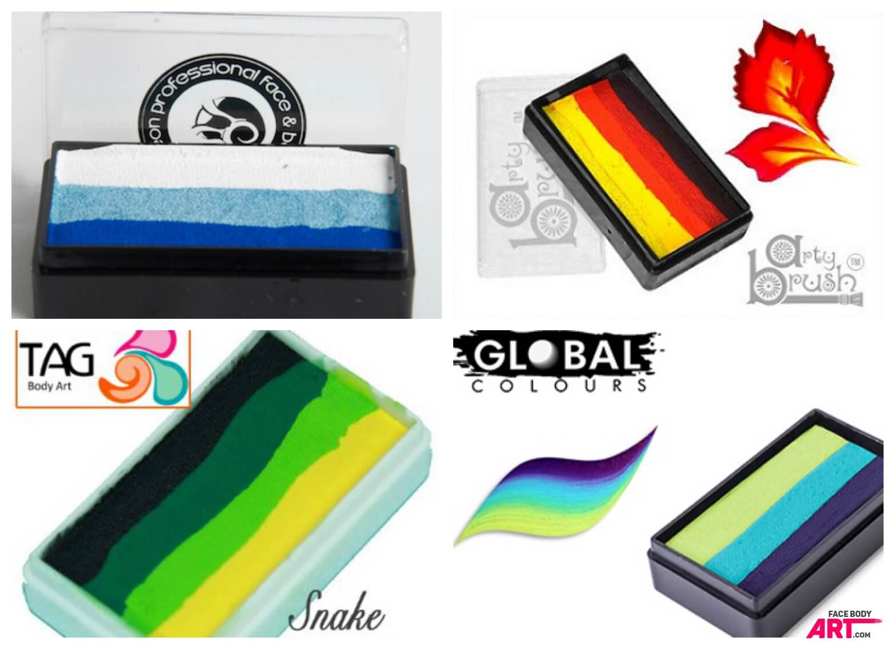
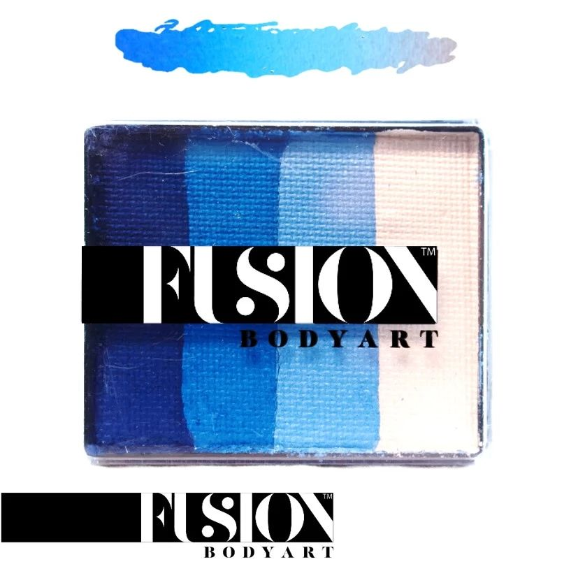
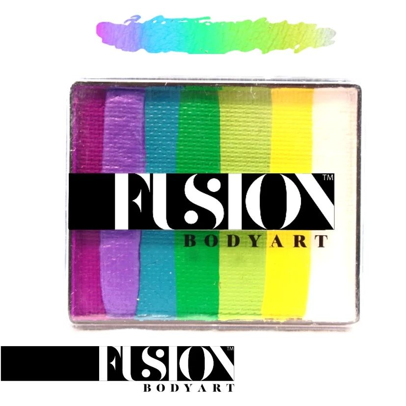
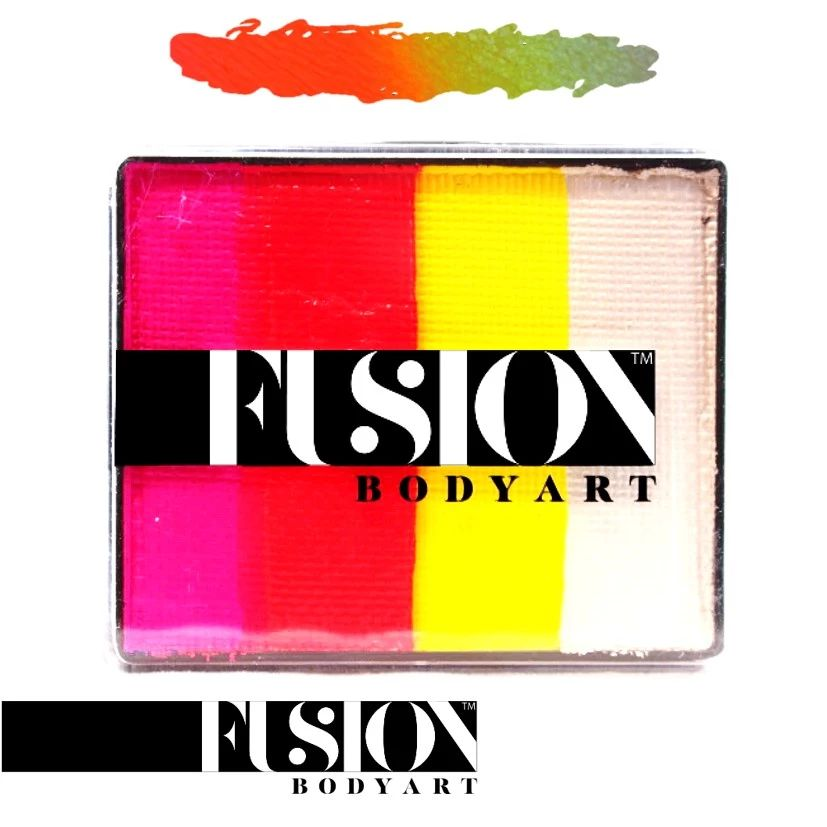
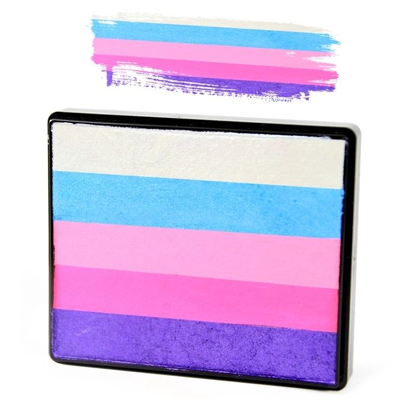
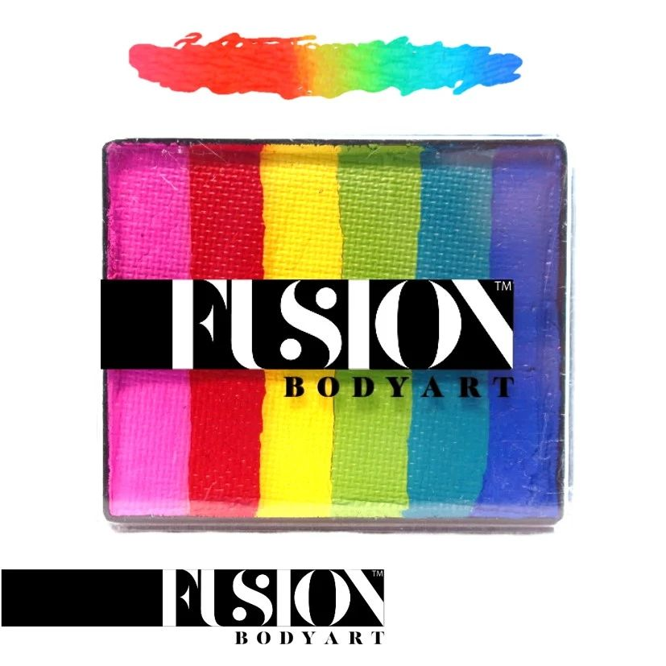
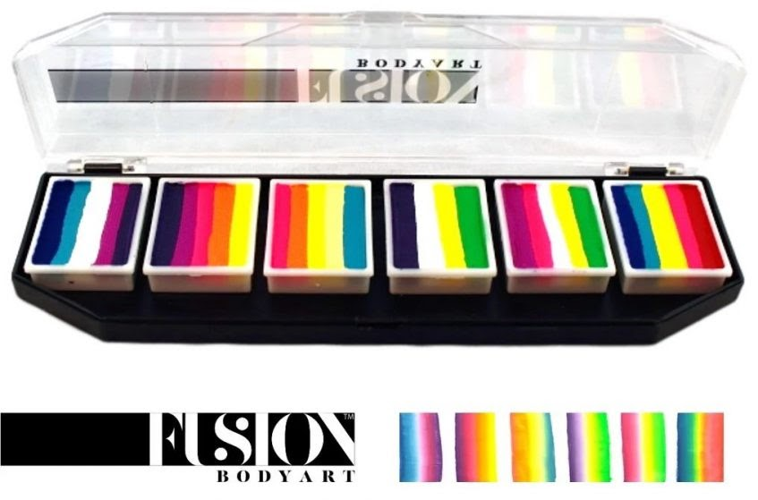
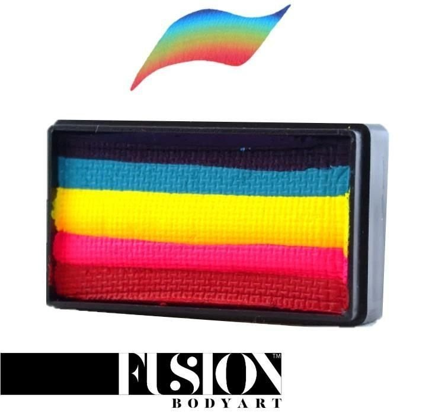
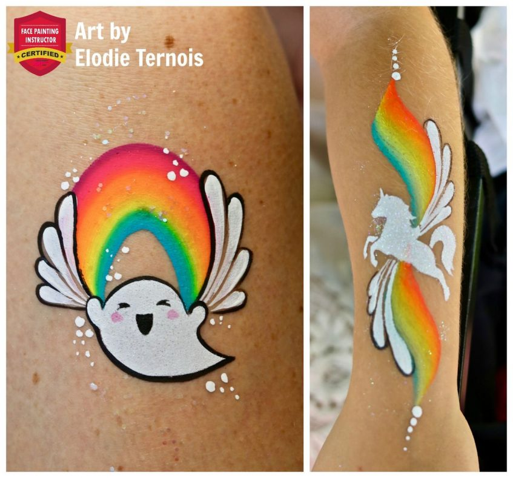
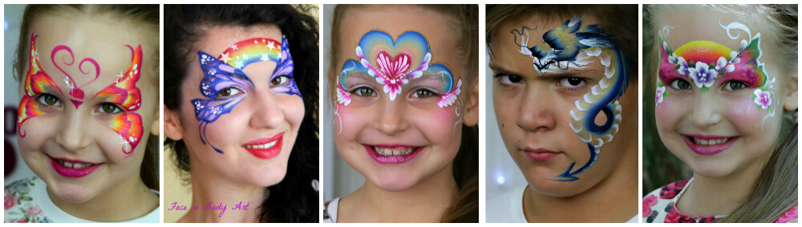
Lekce 5: Palety barev na obličej
Téměř každá kvalitní značka vyrábí palety 6, 12 nebo více barev. Jednotlivé barvy obvykle v 10g obalech, split-cakes v původní velikosti. Palety se skládají z normálních, metalických, neonových nebo pouze tónů pleti.
Pokud jste začátečník a rozhodli jste se, jestli chcete žít z malování na obličej, paleta je skvělý start. Pokud nejste připraveni investovat do jednotlivých barev, nebo hledáte mini-kit na cestování, doporučujeme Fusion Body Art Sampler Face Painting Palette — živé normální barvy včetně bílé a černé. Kompletní mini sada pro okamžité použití.
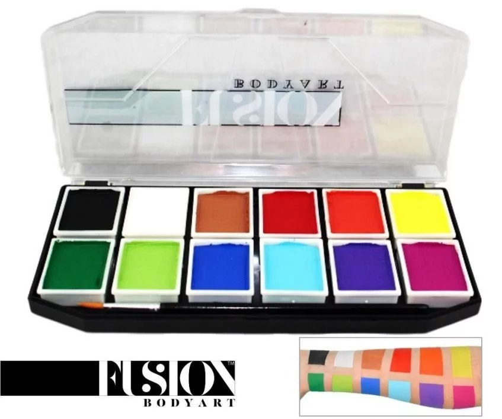
Lekce 6: Jak vybrat barvu z obrovské rozmanitosti odstínů
Tolik barev, tolik odstínů, tolik značek — výběr vás může omráčit. Dokonce se i názvy barev liší mezi značkami (např. „teal" vypadá u značek různě). Množství pigmentu se liší od šarže k šarži. Neexistuje snadný způsob, jak se rozhodnout — jen osobní preference a zkušenost.
Oblíbené barvy autora:
Perlové/metalické barvy (zlato, stříbro atd.): Oblíbení jsou Superstar (FAB) — měkká struktura, vibrantní jedinečné odstíny, překvapivý lesk, dokonce i třpytky v barvě. Lepší, než se dalo očekávat.
Mango od Paradise (Mehron): Mid-tone mezi žlutou a oranžovou, jako písčité/kryjící zlato. Pro pozadí tygrů, lvů, leopardů. Glycerin — velmi dobře se míchá.
Tiger od Cameleon: Mírně tmavší, stejné použití.
Old Gold od TAG: Perlová, mezi zlatem a chladným hnědým. Pro mísení s tmavými barvami jako Earth Brown. Kombinujte se zlatem. Alternativy: Steampunk od Cameleon, Old Gold od Superstar.
Copper od TAG: Úplné spektrum zlatých odstínů, kombinujte s oranžovou.
Bronze Green od TAG: Velmi měkká, kombinujte s limetkou, neonově zelenou, tmavou zelenou. Dobře se míchá, vytváří poloprůhledné pozadí. Alternativa: Fleur de Lise od Cameleon.
Capulete od Cameleon: Měkká světle růžová perla pro tvářenku.
Metallic Magenta + Regular Magenta od Global: Regular pro double dip květy a jasně silnou růžovou. Metallic je všedobý favorit na rty. Alternativa: Bollywood Pink od Cameleon.
Magenta od FAB (#139 Superstar): Mírně chladnější, velmi vibrantní a hluboká, metalická. Oblíbený Jenny Saunders.
Neon Magenta od TAG: Super jasná šťavnatá růžová, oblíbená u dívek.
Red od Paradise (Mehron): Bohatší a tmavší než ostatní červené (normální Paradise červená je Beach Berry). Na rty, tmavou bohatou sametu červenou, krevní stříkance.
№043 od Superstar: Šťavnatá vibrantní bohatá tmavá modrá, rychle se stala oblíbenou autora.
№213 od Superstar (FAB Ziva Blue): Perlová světle modrá, vibrantní, skvělá alternativa k teal, protože nezanechává skvrny na pokožce.
№025 od Superstar: Nejtmavší hnědá v jakékoli značce, tmavší a chladnější než normální hnědá. Pro stíny, měkčí obrys (alternativa k černé), větve, zombies. Alternativy: Earth Brown od TAG, Espresso od Cameleon.
Shrnutí: Jako začátečník začněte se základy a svůj kit personalizujte, jak získáte zkušenosti.
Lekce 7: Voděodolné barvy na obličej
Díky tvůrčím myslím mohou nyní face painteři vytvářet designy odolné vůči potu, voděodolné a nerozmazatelné — pro bazénové párty a vodní parky! Také pro horké/vlhké klima, kde se barvy na vodní bázi okamžitě rozmazávají.
Zaměření na ProAiir: Alkoholová voděodolná značka make-upu z USA. Bezpečná pro pokožku, FDA schválena, není testována na zvířatech, veganská. Čtyři produkty: Hybrids, DIPS, Solids, Inks.
ProAiir HYBRID: Především pro airbrush, ale lze je nanášet štětcem (velmi pigmentované). Dostupné v lahvích 2oz a 4oz, jednotlivě nebo v 6-barevných sadách. Varování: dostatečná ventilace, pryč od plamene, pouze pro externí použití, vyhněte se kontaktu s očima.
ProAiir DIPS: Speciálně pro linky. NENANÁŠEJTE plošně houbičkou (jsou velmi koncentrované a obtížně se odstraňují). Používejte pouze na detaily a tenké linie. Jde o koncentrovanou verzi Hybrids. Lze je nanášet přes cake make-up, pudr, hybrid podklad nebo přímo na pokožku. Hustá konzistence jako akryl — lze je dokonce používat na one stroke! Bílá je velmi koncentrovaná, může potřebovat promíchání tyčinkou.
Tipy pro DIPS: Pečlivě protřepejte lahve. Pokožka musí být čistá (bez emulzí/olejů). Naneste na malou uzavíratelnou misku. Ředěte alkoholem na požadovanou konzistenci. Nabírejte z misky, zvlhčujte alkoholem podle potřeby. Kombinujte DIPS mezi sebou nebo s Hybrid pro nové barvy. Uchovávejte uzavřené, aby nevyschly — reaktivujte alkoholem. Růžová může zanechat skvrny — naneste nejprve bílý základ. Vyzkoušejte kabuki štětec.
Čištění štětců: NEPOUŽÍVEJTE vodu! Nechte přirozeně zaschnout (reaktivujte alkoholem) nebo do štětin vetřete TEKUTÉ MÝDLO a otřete papírovým ručníkem.
ProAiir SOLIDS: Zbrusu nový produkt, vypadá jako normální barva na vodní bázi, ale místo vody se používá ProLong aktivátor. Pro štětce/houbičky v horkém/vlhkém klimatu, bazénové párty, odolnost vůči pocení. ProLong dává bohatý pigment; 99% IPA dává transparentnější efekt, ale výrobce říká, že jiné produkty než ProLong mohou způsobit odlučování. Tip: Barva schne rychleji kvůli alkoholu — pracujte vyšší rychlostí. Jednotlivě 14g, palety 42g (7g každá + 1oz ProLong). Míchání je možné. Odolnost překonává všechny ostatní produkty ProAiir — může vydržet i několik dní. NEVYTVÁŘEJTE split-cakes ze SOLIDS.
ProAiir INK: Pro body painting nebo dočasné tetování. Obtížnější odstranění — NENÍ pro obličej. Lahve 1oz, 2.1oz, 4.2oz. Vydrží 5–10 dní při správném nanášení. Hlavní použití: airbrush dočasné tetování. NENÍ na obličejové malování.
Jak ODSTRANIT ProAiir:
- DIPS a Hybrid: Tekutá mýdla, olej nebo odstraňovač make-upu. Začněte tenkou vrstvou tekutého mýdla nebo olejnatého odstraňovače, pracujte dovnitř, opláchněte. Opakujte. Buďte jemní. Nepoužívejte vonné vlhčené ubrousky (vůně může způsobit alergické reakce). Krém na zbývající skvrny. Počkejte 24h, pokud skvrny přetrvávají — přirozené pocení/olej pomáhá.
- Štětce/houbičky: Používejte mýdlo na štětce jako Pink Soap od Mona Liza. Umyjte, opláchněte, řádně usušte před uložením. Také 70% alkohol funguje.
- INK: 91% IPA nebo dětský olej. Nechte působit, jemně třete houbičkou s mýdlem a vodou. Na celé tělo: namažte olejem a nechte louhovat v teplé vaně.
- SOLIDS: Mohou vydržet dny, vyžadují drhnutí, dětský olej nebo IPA. Naneste tekuté mýdlo nebo dětský olej na design, nechte působit a opláchněte až po uvolnění pigmentu.
Jak SKLADOVAT: Mimo přímé světlo, chladné a suché prostředí. Uchovávejte s těsně uzavřeným víčkem. Trvanlivost 3–5 let po otevření, 10 let neotevřeno.
Modul 4 — Zlaté a stříbrné barvy. Pudry pro malování na obličej.
Metalické barvy, lisované pudry, metalické prášky a jejich použití
Lekce 1: Vlastnosti zlatých a stříbrných barev
Zlato a stříbro patří mezi nejdrahocennější kovy světa, ale pokud jde o barvy na obličej a tělo a nekonečnou debatu o tom, která značka dává nejlepší výsledky — podle mých zkušeností neexistuje jasný vítěz. Myslím, že každý face painter by měl trochu experimentovat a najít, co nejlépe vyhovuje jemu a jeho stylu malování.
V tomto modulu vám pomohu pochopit klíčové rozdíly mezi zlatými a stříbrnými barvami různých oblíbených značek a představím vám také lisované pudry, což je jiný typ produktu obzvláště oblíbený u face painterů a vizážistů pracujících ve vlhkém prostředí.
Jeden z nejpodstatnějších rozdílů mezi značkami je přítomnost (nebo absence) metalického prášku jako složky barvy.
Barvy obsahující metalický prášek:
Barvy bez metalického prášku:
Řada Paradise od Mehronu se nedávno rozšířila o nový typ zlatých a stříbrných barev s metalickým práškem, čímž se velmi přiblížila metalickým práškům, které tato společnost rovněž vyrábí. Tyto barvy mají velmi lesklý, metalický povrch a vypadají úžasně, pokud chcete pokrýt velké plochy pokožky, např. při vytváření metalických soch. Jsou také perfektní na linky. Důležité je ale pamatovat, že prášek v barvě je lehčí než voda i než jakákoli jiná barva, což může ztížit proces blendování.
Superstar (FAB) je další značka, která zahrnula metalický prášek do barvy, ale v menším množství než Mehron Paradise. Přesto barvy Superstar (FAB) poskytují pěkné, lesklé metalické krytí, ale bohužel mají stejné problémy s blendováním. Superstar (FAB) má také řadu metalických barev s třpytkami — nazývají se shimmer gold a shimmer silver.
Barvy bez metalického prášku se snáze míchají s ostatními barvami, ale nedosahují tak lesklého metalického efektu jako ty popsané výše.
Lekce 2: Ukázka nanášení zlaté barvy
Podívejte se na animované ukázky nanášení zlaté barvy různými nástroji:


Lekce 3: Ukázka nanášení stříbrné barvy
Podívejte se na animované ukázky nanášení stříbrné barvy různými nástroji:


Lekce 4: Lisované pudry
Lisované pudry lze také využít pro malování na obličej a make-up. V současnosti existují tři nejlepší varianty lisovaných pudrů na trhu. První dvě jsou palety Mehron iNtense a řada Ben Nye Lumiere. Třetí je můj oblíbený produkt vyvinutý neskutečně talentovanou vizážistkou a face painterkou Elisou Griffith. Paletu Elisy můžete zakoupit na jejích oficiálních stránkách www.elisagriffith.com nebo v místním obchodě s potřebami pro face painting. Tato paleta se prodává na všech kontinentech.
Další variantou, jejíž popularita nedávno vzrostla, jsou lisované pudry Mehron Starblend. I když jsou relativně levné a snadno dostupné, nejsou tak zářivé jako ostatní lisované pudry doporučené zde. Mohou být dobrou volbou pro malíře pracující venku v extrémně horkém a vlhkém klimatu, protože se nerozpouštějí a netečou na zpocených lidech. Výsledky však nebudou tak barevně intenzivní jako u klasických barev na obličej. I v tomto případě doporučuji nejprve vyzkoušet ostatní lisované pudry.
Výhody lisovaných pudrů:
- Skvělá alternativa k barvám na vodní bázi, zejména v horkých a vlhkých oblastech
- Nepotřebujete vodu k aktivaci
- Barvy se snadno míchají a blendují
- Pudry nanesené s primerem (Elisiny pudry) jsou voděodolné — nerozpouštějí se při kontaktu s vodou
- Linky nanesené přes lisované pudry s primerem (Elisiny pudry) nepřebírají barvy z pozadí
- Třpytkové gely lze nanášet přímo na pudrový základ bez stírání barvy pozadí
- Čistší nanášení šablonových vzorů a designů
- Čisté ruce a nehty díky použití „lízátek" (beauty blenderů) místo houbiček
- Žádné riziko rozmazání barvy na oblečení klienta
- Lze použít jak pro face painting, tak pro make-up
Nevýhody a obtíže:
- Barvy jsou bledší než klasické barvy, pokud se nanáší bez primeru
- Pudry Ben Nye a iNtense nejsou voděodolné, pravděpodobně proto, že se používají bez primeru
- Lze použít pouze na pozadí, bez možnosti vytváření linek
- Mohou být složité na celoplošné designy
- K odstranění pudrů nanesených s primerem je nutný odstraňovač make-upu nebo olej
Color Me Pro paleta od Elisy Griffith: Hlavní produkt je magnetická paleta s výběrem 18 zářivých a šťavnatých barev. Existují i menší palety jako All You Need, Fancy Life a Ready to Party s 15 barvami. Nový vylepšený magnetický podklad umožňuje přidávat, vyměňovat a odebírat barvy podle potřeby, což usnadňuje přepravu a je praktické pro velké objemy práce. Můžete si zakoupit buď kompletní paletu Color Me Pro, nebo prázdnou magnetickou paletu, kterou si naplníte vlastní kombinací barev.
Dalším užitečným nástrojem, který Elisa vyvinula pro použití se svými lisovanými pudry, je Ultimate Primer. Pudry můžete nanášet s primerem i bez něj, ale pokud nejprve nanesete primer, barvy budou sytější a odolnější vůči rozmazání. Primer nanášejte nadýchaným make-up štětcem (jako kabuki štětec) a rozprostřete tenkou vrstvu po pokožce, jako byste nanášeli krém nebo make-up.
K nanášení a blendování pudrů potřebujete sadu „lízátek" (beauty blenderů nebo smoothie blenderů).
Postup malování s lisovanými pudry (ukázka Nancy Wu):
- Naneste vrstvu primeru na pokožku kabuki štětcem (nebo nadýchaným štětcem na oční stíny).
- Smoothie blendery naneste pudr. Hrubě načrtněte motiv (jednorožec) — přesnost není nutná, protože půjdete přes to linkami.
- Obtáhněte motiv černou barvou.
- Přidejte slzičky a spirálky kolem motivu.
- Protože pudrový základ není na vodní bázi, i při použití světlé barvy na vrch nepřebírá barvy z pozadí. Nezáleží na tom, kolikrát přes to přejedete.
- Přidejte černý obrys ke slzičkám a spirálkám pro lepší definici.
- Přidejte bílý obrys k designu a hvězdičky jako ozdobu.
- Naneste pixie paint (třpytkový gel) na design! Díky voděodolným vlastnostem pudrových barev se z pozadí nic neodstraní.
Další známá vizážistka a face painterka Shawna Del Real používá Elisiny pudry pro make-up nebo v kombinaci s face paintingem.
Jedna úžasná vlastnost Elisiných lisovaných pudrů nanesených s primerem je, že se stávají skutečně voděodolnými! Nancy Wu laskavě sdílela svůj experiment, který to dokazuje.
Pokud chcete pudry ještě více fixovat, můžete použít speciální produkt zvaný barrier spray (fixační sprej). Lze ho nanést dvěma způsoby: buď na čistou pokožku, nebo přes hotový design. Je důležité sprejovat pod správným úhlem. Nicméně na základě osobních testů Elisiny palety v praxi jsem nezaznamenala potřebu fixace pudrů. Použití s primerem vydrží dokonce déle než normální barvy na obličej bez jakéhokoli fixování.
Lekce 5: Metalické prášky
Mehron vyrábí speciální sypké metalické prášky v malých lahvičkách, které jsou dostupné ve čtyřech barvách: stříbrná, zlatá, staré zlato a bronzová. Tyto prášky mají silný metalický lesk a jsou perfektní pro pokrytí velkých ploch pokožky. Obzvláště je upřednostňují performeři předvádějící metalické sochy.
Existují tři způsoby nanášení na pokožku:
1. Suché nanášení: Nasypte trochu prášku do čistého víčka od barvy a vlhkou čistou houbičkou do něj ťukejte, poté nanášejte na pokožku ťukavým pohybem. Prášek se nesmíchá s vodou, protože je příliš lehký. Tato metoda je poměrně nepořádná a prášek zůstává na pokožce nezafixovaný, takže se může přenést na jiné předměty, oblečení nebo osoby.
2. Smíchání s olejem: Funguje jakýkoli tekutý rostlinný olej — osobně preferuji olivový nebo hroznový olej. Nalijte trochu oleje do čistého víčka a přidejte prášek, důkladně promíchejte, dokud nezískáte metalickou kaši. Směs nanášejte na pokožku širokým štětcem nebo houbičkou. Tato metoda dává velmi silný metalický lesk a je perfektní pro pokrytí celého těla. Ani tato metoda však prášek nezafixuje, takže je třeba být opatrný, aby se barva nepřenesla na okolní předměty.
3. Smíchání s mixing liquid (směšovací tekutinou): Mixing liquid vyrábí Mehron a je speciálně navržená pro míchání s metalickými prášky. Technika míchání a nanášení je stejná jako v předchozím případě, s jednou výhodou — tekutina prášek zafixuje, takže nedochází k přenosu barvy z pokožky.
Další značkou vyrábějící metalické prášky je Graftobian. Produkt se jmenuje Cosmetic Powdered Metal a je dostupný ve 3 barvách. Je podobný Mehronu. Jediný rozdíl je, že Mehron mixing liquid je na bázi alkoholu, zatímco Graftobian mixing liquid alkohol neobsahuje (ale obsahuje ureu), takže je univerzálnější.
Lekce 6: Aktivace metalického prášku
Postup:
- Nasypte trochu prášku do čistého víčka od barvy.
- Přidejte pár kapek mixing liquid a důkladně promíchejte, dokud nezískáte hladký krém.
- Přidávejte více tekutiny nebo prášku podle dosažené konzistence.
Modul 5 — Neonové barvy, terminologie a bezpečnost.
UV barvy, regulace, varování na obalech a doporučení pro face paintery
Lekce 1: Vysvětlení terminologie
Skutečné hvězdy světa malování na obličej a tělo — UV (neboli neonové) barvy jsou bezpochyby nejjasnější a možná nejméně pochopené produkty v oboru. V tomto modulu se pokusím tento žánr vysvětlit a vyvrátit některé mýty obklopující tuto vzrušující formu barev na obličej a tělo.
Neonové barvy (nebo UV barvy) jsou řadou barev na obličej a tělo obsahujících fluorescenční fosfory, díky kterým zdánlivě svítí ve tmě. Ve skutečnosti ale tyto barvy potřebují „černé světlo" (ultrafialové světlo) k aktivaci.
Termín „neon" není úplně přesný — neon je plyn, který září červeně při vysoké teplotě a obvykle se používá k výrobě svítících reklamních neonů ze skleněných trubic. Výrobci ho ale používají k popisu toho, že barvy jsou opravdu jasné, jako neonové světlo pod UV lampou. Další plyny používané pro tento účel jsou helium, argon, krypton a xenon.
Neonové barvy tedy svítí POUZE pod UV světlem. Neexistuje žádná barva na obličej, která by svítila ve tmě bez UV světla.
Většina neonových barev je v denním světle velmi jasná díky tzv. day glow pigmentům. Neonová žlutá, oranžová, růžová a zelená jsou poměrně výrazné i za denního světla a lze je používat jako běžné barvy na obličej a tělo. Naproti tomu barvy jako neonová modrá a fialová obvykle za denního světla nejsou tak výrazné a svítí pouze pod UV lampou.
Důležitá poznámka: neonová bílá sice v kelímku vypadá normálně, ale na pokožce téměř zmizí — nebojte se ale, jakmile ji vystavíte černému světlu, krásně zazáří.
Tady to ale začíná být komplikovanější — zatímco všechny neonové barvy svítí pod UV světlem, ne všechny vypadají jasně a „neonově" i za denního světla. Aby barvy vypadaly superjasně za denního světla, musí make-up obsahovat day glow pigmenty, které nejsou FDA schválené pro kosmetiku. Proto uvidíte varování na obalech neonových barev některých značek.
Ve snaze nabídnout pouze FDA kompatibilní UV barvy nabízejí Snazaroo, Ruby Red a Diamond FX (speciální FDA NEON White, FDA NEON Blue a FDA NEON Violet) řadu barev, které reagují pod UV světlem. Tyto barvy ale za denního světla nevypadají fluorescenčně a méně svítí pod UV lampou.
Mezi jednotlivými značkami není velký rozdíl v tom, jak výrazně neonové barvy vypadají za denního světla — pokud se rozhodnete je používat v běžné praxi, jednoduše si vyberte z profesionálních značek představených v Modulu 1. Pokud budete neony používat pod UV světlem (pro UV body painting nebo neon párty), může se hodit vědět, že neonové barvy Cameleon svítí pod UV světlem nejlépe ve srovnání s Diamond FX a TAG.
Lekce 2: Jsou neonové barvy v souladu s FDA, EU a australskými standardy?
Právě jste utratili malé jmění za neonový make-up do svého kitu, abyste je otočili a přečetli si něco ve smyslu „ne pro kosmetické použití" nebo „pro vlasy a speciální efekty". Začnete panikařit a přemýšlet, jak vám jakýkoli seriózní prodejce barev na obličej mohl podstrčit tento produkt. Možná se vám začnou honit strašlivé myšlenky o všech těch dětech, které jste pomalovali na posledním eventu, a o rodičích řadících se do fronty, aby vás zažalovali. Nebo si možná říkáte, proč tolik face painterů má neony ve svém kitu, když nejsou vyrobeny pro pokožku.
Pokud budete hledat toto téma na diskusních fórech a sociálních sítích, najdete nekonečné diskuse s komentáři umělců — od těch, kteří nemají žádný problém používat neonové barvy na kohokoli, až po ty, kteří jsou naprosto proti používání jakékoli neonové barvy.
Snazaroo, Ruby Red a tři nové barvy Diamond FX (speciální FDA NEON White, FDA NEON Blue a FDA NEON Violet) jsou zatím jediné značky, jejichž neonové barvy používají pouze FDA schválené neonové pigmenty. Ostatní značky podaly žádosti o FDA testování, ale čekací doba je roky a roky.
Ale uklidněte se a pojďme se podívat, jak to vlastně s neonovými barvami v oboru face paintingu je.
Lekce 3: Pravda o varováních
FDA netestovala UV reaktivní pigmenty, které tyto společnosti používají ve svých barvách, konkrétně pro použití v kosmetice. Většina výrobců barev na obličej si však nechala provést nezávislé testování svých neonových make-upů a zjistila, že jsou bezpečné pro použití na pokožce.
FDA se ve skutečnosti spoléhá na to, že výrobci sami provedou vlastní testování k zajištění bezpečnosti svých produktů, přičemž uvádí, že výrobci sami nesou právní odpovědnost za to, že jejich produkty jsou bezpečné.
Proto nikdo nemůže tvrdit, že je jeho produkt „FDA SCHVÁLENÝ" (FDA Approved), protože FDA neschvaluje kosmetiku. Schvaluje pouze ingredience, jako jsou pigmenty, které vstupují do kosmetiky. Takže zatímco některá kosmetika může být označena jako „FDA Compliant" (v souladu s FDA), žádná kosmetika sama o sobě není technicky „FDA Approved".
Protože FDA dosud netestovala tyto pigmenty pro použití v kosmetice, zákon Fair Package and Labelling Act vyžaduje, aby výrobci označili své obaly s omezeními ohledně toho, zda by se určité pigmenty neměly používat kolem očí, rtů atd. — bez ohledu na jakékoli pozitivní výsledky, které mohli obdržet z nezávislého testování.
Proto uvidíte varovné štítky na svých neonových/UV barvách. Může to být tím, že přísné pokyny pro označování nedávají fyzicky dostatek prostoru k vysvětlení, kde jsou určité barvy bezpečné k použití, nebo k poznámce o výsledcích vlastního testování (i když některé značky uvádějí vlastní testování na štítku).
Příklady varování na populárních značkách na trhu:
- „Nepoužívejte kolem očí ani na rty"
- „Produkt pro speciální efekty"
- „Dermatologicky testováno pro bezpečnost, ale nesplňuje mezinárodní kosmetické předpisy"
- „Pouze pro vlasy a nekosmetické účely"
- „Produkt pro speciální efekty, ne pro kosmetické použití"
Lekce 4: Odpověď výrobce na toto téma
Vyjádření zástupce Diamond FX:
U day glow barev je barvivo vsazeno do pryskyřice a nemá přímý kontakt s pokožkou. Běžné neonové barvy nikdy nebyly oficiálně schváleny pro kosmetické účely — používá se pouze tzv. fosforeskující barevný pigment. Tato barva obsahuje nízké procento volného formaldehydu (pod schváleným procentem).
V roce 2000 byla schválena FDA pro použití jako kosmetický produkt. USA je jedinou zemí na světě, kde může být takový produkt distribuován s označením „pro kosmetické účely".
Diamond FX si musel být jistý, že tato barevná přísada neobsahuje žádné nebezpečné materiály. Datový list dodavatele a nezávislé laboratoře to potvrdily. Barvy Diamond FX Aqua Colour byly předány dermatologovi k ověření snášenlivosti pokožky a ujištění, že produkt nepoškodí citlivou pokožku. Závěr: neonové barvy DFX jsou pro lidskou pokožku neškodné. Označení „není kosmetický produkt" je na produktech uvedeno pouze z právních důvodů.
Protože ale výrobce nebyl 100% spokojen, chtěl zákazníkům nabídnout produkt, u kterého se budou cítit 100% jistě — proto již několik let vyrábí 3 barvy, které jsou 100% FDA schválené: speciální FDA NEON White, FDA NEON Blue a FDA NEON Violet. Tyto barvy neobsahují formaldehyd a jsou plně schváleny pro kosmetické účely. Mohou být použity na jakoukoli pokožku, pouze mají mírně slabší efekt pod černým světlem.
Vyjádření zástupce Global Colours:
Na nejčastější otázku, zda jsou UV barvy bezpečné pro použití na pokožce, zástupce Global Colours v roce 2016 odpověděl, že UV pigmenty v jejich produktech na obličej a tělo používají 20 let bez známých problémů.
Vysvětlil, že australské zákony zakazují použití těžkých kovů, olova a nebezpečných toxinů v kosmetických produktech, ale neexistují specifické zákony pro UV pigmenty — proto produkt v Austrálii nevyžaduje specifické označení. V USA a Evropě mají regulace kosmetických produktů odlišný přístup.
FDA má seznam schválených ingrediencí pro kosmetiku, který nezahrnuje neonové pigmenty. Není to proto, že by byly škodlivé — FDA jednoduše neonové ani fluorescenční pigmenty nikdy netestovala. Proto musí být UV barvy na obličej a tělo prodávané v USA a Evropě označeny jako produkt pro speciální efekty.
Global Colours Body Art se prodává celosvětově, a proto je produkt formulován podle evropských a amerických standardů, protože ty jsou nejpřísnější.
Závěr: Varovný štítek je otázkou místní regulace. Neznamená to, že produkty nejsou bezpečné pro použití na pokožce — jen nebyly testovány pro tento účel. Každý face painter si musí udělat vlastní názor na to, jak přistoupí k používání UV barev. Rozumná opatrnost je na místě, a jako u jakéhokoli kosmetického produktu — pokud se objeví známky podráždění, přestaňte produkt používat.
Lekce 5: Co by měl face painter dělat?
Nakonec je na vás, zda chcete neonové barvy používat ve svých službách malování na obličej a tělo. Většina profesionálních face painterů spadá do jedné z následujících tří kategorií:
1. „Nikdy v životě!" — Tito umělci předpokládají, že pokud barva není FDA schválena pro použití na pokožce, je nebezpečná, nestojí za riziko, a nepoužívají žádné neonové barvy vůbec.
2. „Občas mohu udělat výjimku" — Používají některé neonové barvy, s mírou. Drží je od očí a úst a připomínají klientům, aby si barvu po akci (nebo alespoň před spaním) smyli.
3. „Varování mě nezajímají" — Tito umělci věří, že pokud FDA nepovažovala pigmenty za dostatečně škodlivé, aby je testovala, a nebyly prokázány jako nebezpečné, riziko je minimální — a používají je, jak se jim zlíbí.
Modul 6 — Štětce, houby, šablony, glitry a vše ostatní, co face painter potřebuje.
Přehled nástrojů a příslušenství pro malování na obličej
Lekce 1: Štětce
V tomto modulu je čas podívat se blíže na všechny nástroje a příslušenství v kitu face paintera. Doufám, že nyní již dobře rozumíte tomu, že kvalitní barvy na obličej a tělo jsou pro vytváření skvělých designů zásadní. Přesto, jelikož mnoho začátečníků má omezený rozpočet, řada z nich může při investici do nástrojů a příslušenství kvalitu podceňovat.
V předchozích modulech jsme probrali důležité téma profesionálních barev. Ale co štětce? Jaký typ byste měli používat? Dají se koupit v obchodě s výtvarnými potřebami?
Podle mých zkušeností může typ štětce výrazně ovlivnit konečný výsledek a je mnohem snazší vytvořit pěknou práci se sadou profesionálních kvalitních štětců než s levnými hobby štětci. Pokud se o své kvalitní štětce správně staráte (správně je používáte, myjete, skladujete a dezinfikujete), vydrží vám mnoho let. Možná jste našli sadu hobby štětců, které se zdají na začátku fungovat dobře, ale z mé zkušenosti se levné štětce velmi rychle opotřebovávají a vyžadují výměnu. Tím o své úspory stejně přijdete.
Kolik štětců potřebujete? Není neobvyklé vidět stovky štětců v kitu profesionálního face paintera. Ve skutečnosti ale většina face painterů použije na jedné akci maximálně 30 štětců, a pravděpodobně mnohem méně, v závislosti na svém stylu. Můj osobní kit obsahuje přibližně 40 štětců, včetně náhradních.
Proto doporučuji mít sadu kvalitních štětců, které jsou speciálně navrženy a otestovány pro malování na obličej a body art.
Štětce pro face painting lze rozdělit do pěti skupin:
- Kulaté štětce
- Ploché štětce
- Šikmé (úhlové) štětce
- Filbert a chisel štětce
- Speciální štětce — blendovací, dvojitý filbert, flora štětec, vějířový štětec
Pokud nemáte malířský stojan s oddílem na štětce, nejlepší způsob skladování jsou pouzdra na štětce (brush cases/wallets), zejména taková, která mají vložky a udržují štětiny každého štětce nedotčené. Více o tomto tématu v Části druhé, Modulu 9.
Lekce 2: Kulaté štětce
Kulaté štětce se používají hlavně na linky (slzičky, spirálky, kudrlinky, tygří pruhy, obrácené slzičky, tečky, obrysy) a také na budování tvarů.
Moje oblíbené jsou Kingart 7950 White nylon series (žluté dřevěné rukojeti). Také mě uvidíte hodně pracovat se štětci série 7000C (starší šarže — černé plastové rukojeti). Nová šarže s černými dřevěnými rukojeťmi není tak dobrá jako stará, proto ji nedoporučuji.
Další skvělé možnosti pro kulaté štětce:
- Paint Pal Swirl series — Navrženy sillyfarm.com, velikosti #1 až #5.
- Aliyah Round a Ultra Round — Navrženy a prodávány na brushesandmore.com. Ultra Round série odpovídá velikostí sérii Loew Cornell 795, série Round jsou větší (#4 odpovídá velikosti #6 Loew Cornell).
- Bolt FIRM kulaté štětce — Navrženy jestpaint.com, velikosti #2, #3 a #4. Tyto štětce mají špičatý hrot, který vám pomůže okamžitě dosáhnout dlouhých, tenkých a ostrých konců linií. Díky tuhosti štětin se ale mohou občas rozštěpit, zejména při ostrých úhlech. JestPaint vyvinul dodatečnou sérii s měkčími štětinami, velmi podobnou Kingart 7950.
- Marcela Bustamante kulaté štětce — Vytvořeny královnou linek, profesionální face painterkou z USA. Marcela má kompletní řadu štětců včetně flora, šikmých, plochých, filbert a liner štětců.
- Mark Reid Signature brushes — Hledejte novou šarži s označením Signature, protože dřívější šarže měly problém s rozštěpením štětin. Velikosti #2, #4 a #6.
- Art Factory Studio Round — Navrženy shopglittertattoos.com, velikosti #1, #3, #4 a #6.
- Sparkling Faces brushes — Vyvinuty Svetlanou Keller z Lichtenštejnska. O něco dražší, ale pokud je seženete, nikdy nebudete litovat. Mírně měkčí než Kingart.
Lekce 3: Ploché a šikmé štětce
Existuje několik značek, které vyrábějí kvalitní ploché a šikmé štětce. Face painteři používají tyto typy štětců především pro techniku one stroke. Při výběru plochého nebo šikmého štětce dbejte na štětiny — měly by být pružné a čistě zastřižené, aby ve vlhkém stavu připomínaly čepel.
Technice one stroke se budeme věnovat podrobněji v Části druhé, Lekci 4. Zde si povíme o rozdílech mezi plochými a šikmými štětci a nejlepších značkách.
Ploché štětce jsou obecně vhodné pro jednoduchou duhu nebo základní one stroke linky, ale obvykle nejsou příliš pohodlné pro propracované one stroke prvky. Proto osobně ploché štětce už nepoužívám — šikmé fungují mnohem lépe. Nicméně některé umělkyně jako Natalee Davies a Brierley Thorpe preferují one stroke s plochými štětci a dosahují úžasných výsledků.
Šikmé (úhlové) štětce jsou asymetrické a mají špičatý hrot na jedné straně (nazývaný „toe" — špička). Tento hrot činí štětec obratnějším a umožňuje vytvářet nejrůznější propracované prvky technikou one stroke.
Moje oblíbené šikmé štětce s krátkými štětinami:
- FacepaintStuff angled brushes (facepaintstuff.com) — velikosti 1/2, 5/8 a 3/4. Krátké štětiny, ostré a tenké, snadno se s nimi manipuluje. Kvalitní štětiny dobře drží barvu a uvolňují ji s maximálním pigmentem.
- Facepaintshop angular (facepaintshop.eu) — velikosti 1/4, 1/2, 3/4 a 5/8. Podobné FacepaintStuff, ale mírně silnější a měkčí.
- The Face Paint Shop short angled (thefacepaintingshop.com) — tužší a tenčí než FacepaintStuff. Umělkyně Debz Mills používá převážně tyto štětce pro one stroke s neuvěřitelnými výsledky.
Šikmé štětce s dlouhými štětinami (drží více barvy):
- Superstar angled od Ksenie Dudkiny — čtyři velikosti, velmi ostré.
- American Painter 4400 — jedny z nejpopulárnějších šikmých štětců, různé velikosti a velmi dobrá kvalita.
- Paint Pal angled od Camerona Garretta — jedna velikost.
- Nat's Fancy Faces — od Natalie Davies, v různých velikostech.
- Marcela Bustamante — v několika velikostech.
- Sparkling Faces — od Svetlany Keller, série tvarů a velikostí.
Lekce 4: Filbert a chisel štětce
Filbert a chisel štětce představují plochý typ štětců se zakulaceným okrajem. Rozdíl mezi filbertem a chiselem je v délce štětin — u filbertu jsou delší, u chiselu kratší.
Tyto štětce skvěle fungují pro rychlé pokrytí velkých ploch pokožky, budování zakulacených tvarů, blendování a dokonce i one stroke. Při výběru vybírejte ten s měkkými pružnými štětinami, které drží ostrý zakulacený tvar.
Kvalitní filbert a chisel štětce vyrábějí: Marcela Bustamante, Art Factory, Sparkling Faces, Paint Pal, Bolt, Cameleon, TAG a Mehron (včetně série Mark Reid).
Lekce 5: Blendovací štětce
Blendovací štětec je speciální typ štětce, který vyrábí Cameleon ve dvou velikostech — #1 a #2. Tyto štětce mají krátké nadýchané štětiny s kulatým hrotem a jsou podobné make-up štětcům, což z nich dělá perfektní nástroje pro blendování. Pokud se chcete naučit blendovat, velmi doporučuji mít tyto štětce ve svém kitu.
Některé umělkyně si zvykly používat jako alternativu nadýchané make-up štětce, ale jejich kvalita se může velmi lišit — pokud se rozhodnete některý použít, budete muset prozkoumat, jaký nejlepší najdete v místních obchodech.
Lekce 6: Flora štětce a štětce pro double dip
Můj nedávný výzkum a pozorování studentů ukázaly, že existují specifické nástroje, které mohou pomoci zvládnout techniku double dip mnohem snadněji. Jsou to flora štětce a speciální petal (okvětní) štětce.
Flora štětec umožňuje vytvářet široké okvětní lístky pro hlavní květiny širokou stranou, a také delší protáhlé lístky úzkou stranou. Tento štětec pojme hodně barvy a může být velmi užitečný, když jste na akci s dlouhou frontou — správně nabitý středně velký flora štětec vám umožní namalovat celý květinový design bez opětovného nabíjení.
I když mě v kurzu uvidíte provádět double dip běžným kulatým štětcem #6 (mé oblíbené jsou Loew Cornell 3000C a Kingart 7950), zjistila jsem, že tento nástroj nefunguje pro každého. Z mých pozorování většina lidí dosahuje rychlých a působivých výsledků s flora štětci a s novým Pretty Petal štětcem od Paint Pal, původně vytvořeným SillyFarm, ale prodávaným v mnoha obchodech. Velmi doporučuji tento štětec vyzkoušet!
Lekce 7: Houbičky
Houbičky pro face painting jsou důležitým nástrojem, stejně jako štětce. Umělci obecně preferují jeden typ houbičky před druhým v závislosti na svém osobním stylu práce. Při výběru houbiček je třeba zvážit několik vlastností: hustotu, pórovitost, tvar a velikost.
Klasifikace podle hustoty:
- Měkké houbičky — Osobně je nerada používám, protože si při mačkání houbičky s barvou špiním prsty.
- Houbičky střední hustoty — Nejběžnější typ, vyráběný značkami TAG, Mehron, Diamond FX a dalšími. Mám zelené houbičky Mehron a jsou mým favoritem č. 1.
- Husté houbičky — Znám zatím jen jednu značku s vysokou hustotou — černé houbičky Kryvaline.
Klasifikace podle pórovitosti:
- S malými póry — Husté houbičky Kryvaline, perfektní pro šablonování.
- Se středními póry — Obvykle střední hustoty, skvělé pro nanášení barvy ze split-caku.
- Porézní houbičky — Žluté houbičky od Wolfe FX, Diamond FX, Mehron a Cameleon. Střední hustota, pojmou hodně barvy, která se vsákne do velkých pórů, a pokryjí velké plochy jedním nabitím. Skvělé pro vytváření textury, dimenze a budování tvarů. Můj favorit č. 2.
Klasifikace podle tvaru:
- Půlkruhové houbičky — Nejběžnější tvar. Výrobci je vyrábějí v kruzích, které rozříznete na dva půlkruhy (nebo jsou již rozříznuté). Snadno se drží a mají různé strany pro různé účely.
- Okvětní (petal) houbičky — Ve tvaru okvětního lístku, vyráběné Paint Pal, AWA, Ruby Red a dalšími. Skvělé pro nanášení tvaru motýlích nebo vílích křídel. Jako začátečník je velmi doporučuji — pomohou přizpůsobit správnou velikost křídel na dětský obličej. Můj favorit č. 3.
Doporučuji zakoupit pár tuctů houbiček, abyste stihli praní, sušení a dezinfekci mezi akcemi. V některých zemích (jako v Austrálii) platí přísná pravidla o použití jedné houbičky na jedno dítě.
Daubers: Válcové houbičky, které mohou být v plastovém pouzdru nebo na dřevěných tyčkách. Prstové daubers jsou husté houbičky skvělé pro šablonování. Další typy jsou ze středně husté pěny pro nanášení one stroke kombinací. Osobně je ale nepreferuji a dávám přednost běžným houbičkám.
Lekce 8: Šablony
Šablony (stencily) jsou užitečným nástrojem v kitu face paintera. Umožňují rychle vytvářet opakující se vzory, detailní designy a efekty, které by ručně trvaly mnohem déle. Existuje mnoho značek a typů šablon — od jednoduchých geometrických vzorů přes květiny, hvězdičky až po složité mandaly a krajkové vzory.
Šablony se nanášejí pomocí husté houbičky (jako Kryvaline) nebo prstového dauberu — ťukavým pohybem přes šablonu přiloženou k pokožce. Důležité je nepoužívat příliš mokrou houbičku, aby barva pod šablonou nepodtekla.
Populární značky šablon: Ooh! Stencils (TAP), StencilEyes by ShowOffs Body Art, Diva Stencils, Lea Shelley Stencils, Bad Ass Stencils, Schminken by Kristin a mnoho dalších.
Lekce 9: Nádoba na štětce (Brush tub)
Nádoba na štětce (brush tub) je nezbytné příslušenství pro každého face paintera. Slouží k namáčení a oplachování štětců během práce. Nejlepší nádoby mají přihrádky nebo přepážky pro oddělení čisté a špinavé vody.
Existují speciální nádoby navržené přímo pro face painting s více oddíly — jeden pro čistou vodu, jeden pro znečištěnou, a mřížku na dně pro otírání štětců. Mnoho face painterů ale používá jednoduché kelímky nebo nádoby s víkem pro přepravu.
Lekce 10: Glitry (třpytky)
Glitry přicházejí v nejrůznějších tvarech, velikostech, barvách a schopnostech záření. Je na vás, který si vyberete — jen se ujistěte, že používáte výhradně kosmetické glitry. Hobby glitry mohou být levnější a vypadat velmi podobně, ale mohou být vyrobeny z drobných kovových částic, a pokud se dostanou do očí, mohou poškrábat rohovku, vést k vředům na rohovce a dokonce způsobit slepotu. Mohou také zanechat skvrny na pokožce nebo vyvolat alergickou reakci. Proto se hobby glitrům za každou cenu vyhýbejte.
Transparentní glitry (glitter dust): Často nazývané holografické — výborné pro face painting, protože dodají designu pěkný opalizující nádech. Nepřekrývají design, ale přidávají krásný lesklý finální dotek.
Neprůhledné metalické glitry: Ideální pro glitrová tetování a výrazný třpytivý efekt. Dva typy:
Suché neprůhledné glitry — Pro výrazný třpytivý efekt na velkých plochách. Nanášejí se speciálním kožním lepidlem, vazelínou nebo gelem, nebo se používají pro glitrová tetování.
Glitter-gel markery (liquid bling): Průsvitný gel smíchaný s práškovou třpytkou v malé plastové lahvičce s úzkou špičkou. Při stlačení dává tenkou třpytivou linii pro obrysy, linky, tečky nebo třpytivé vzory. Ihned po nanesení se snadno rozmaže, ale po zaschnutí drží velmi dobře. Doporučuji glitter-gely s plastovými špičkami místo kovových. Malé lahvičky se lépe drží a dávají přesnější linky. Musí být výhradně kosmetické kvality.
Chunky (hrubé) glitry: Větší částice, připevňují se kosmetickým lepidlem (aloe vera gel, vazelína nebo glitter glue). Dva typy: suché chunky glitry a chunky glitry předmíchané s gelem.
Biologicky rozložitelné glitry: Vyrobeny z biodegradabilního celulózového filmu z obnovitelných surovin. Řeší problém mikroplastů. Hlavní značky: Eco Glitter Fun a Bio-glitter.
Způsoby připevnění glitrů: Glitter dust přilne k lehce vlhkému povrchu. Chunky glitry vyžadují lepidlo. Pro dlouhotrvající vzhled použijte kosmetické glitrové lepidlo (povolené na rty a oční víčka, smývá se mýdlovou vodou). Pozor: toto lepidlo NENÍ totéž jako glitter glue (prosaid) pro glitrová tetování! V ostatních případech použijte kosmetický gel — vlasový gel, glitrový gel nebo aloe vera gel.
Lekce 11: Průvodce nákupem glitrů
Níže najdete seznam nejpopulárnějších značek glitrů na trhu. Samozřejmě existuje i mnoho dalších — jen se ujistěte, že používáte výhradně kosmetické glitry.
Lekce 12: Domácí úkol — Zkontrolujte svůj kit
Profesionální kit face paintera není kompletní bez kvalitních štětců, houbiček, nádoby na vodu, šablon a kosmetických glitrů. Ujistěte se, že vybíráte tu nejlepší kvalitu, kterou si můžete dovolit — lepší kvalita pravděpodobně přinese lepší výsledky.
A také nezapomeňte se o své nástroje dobře starat — měly by vám vydržet mnoho let.
Nyní byste měli rozumět tomu, jaké typy nástrojů a produktů se očekávají v kitu face paintera.
V dalším modulu začneme s praxí! Abyste z učení vytěžili maximum, ujistěte se, že máte vše důležité na dosah ruky.
Modul 7 — Hygiena a péče o materiál. Jak opravit rozštěpené štětce a poškozené barvy.
Osobní hygiena, péče o barvy, štětce, houbičky a pracovní místo
Lekce 1: Osobní hygiena a práce s lidmi
Malování na obličej je speciální druh umění a face painteři pracují na živém plátně. Proto je velmi důležité věnovat zvláštní pozornost osobní hygieně, čistotě materiálů, pracovního místa a hygienickým pracovním postupům.
Osobní hygiena: Váš vzhled a čistý kit jsou jedněmi z klíčových prodejních bodů a vlastně vaší vizitkou. Samozřejmě víte, že byste měli být vhodně oblečeni — žádné minisukně ani výstřihy při práci s dětmi. Ale uvažovali jste i o tom, jak voníte? Face painteři pracují v těsné blízkosti klientů, proto je rozumné vyhnout se silným deodorantům nebo parfémům. Malé děti (a dokonce někteří dospělí) mohou být na parfémy extra citliví a někteří mohou mít alergie. A samozřejmě, pokud kouříte, nikdy nekuřte v blízkosti, před nebo během práce, zejména u dětí.
Věnujte pozornost i svým rukám. Jsou vaším hlavním nástrojem — i když si lidé obvykle nevšímají, zda máte make-up, vždy si všimnou vašich rukou. Ujistěte se, že jsou vždy čisté s upravenými nehty.
Biologické tekutiny: Jedna z nejdůležitějších věcí je, že nechcete, aby jakékoli biologické tekutiny (vaše ani cizí) kontaminovaly váš kit nebo se přenesly z jedné osoby na druhou. Tím myslíme slzy, sliny, hlen a krev. Mějte vždy po ruce dezinfekci na ruce a dezinfikujte si je mezi klienty nebo alespoň jednou za 10–15 minut.
Vaše pracovní místo: Kit a pracovní místo by měly vypadat uklizeně, organizovaně a čistě. Vždy mějte dostatek vlhčených ubrousků. Používejte ubrousky bez chemikálií. Nikdy neváhejte otřít barvy, nádoby, štětce, šablony a veškeré vybavení alespoň jednou za pár týdnů. Správně organizované pracoviště, kde má každá věc své místo, urychlí vaši práci a přidá body vašemu profesionálnímu vzhledu.
Práce s lidmi: Nemalujte nemocné děti, ani ty se slinami, šmouhami nebo zbytky jídla na obličeji. Tip pro rušné akce: nechte balíček otevřených vlhčených ubrousků s cedulkou „Prosím, otřete svému dítěti obličej před malováním, pokud je špinavý". Doporučuji mít i informační banner s podmínkami vašich služeb.
Pokud má dítě na obličeji škrábnutí nebo odřeninu — nikdy nemalujte na poškozenou pokožku! Nabídněte jako alternativu malování na zdravou pokožku (ruku, nohu) nebo nabídněte gem-cluster či nálepku.
Dezinfekce štětců během práce: Dezinfikujte štětce během práce — někteří malíři po každém klientovi, ale alespoň jednou za 20–30 minut. Skvělé dezinfekční přípravky jsou Brush Bath od SillyFarm a Brush Spa od Face Paints Australia. Jsou speciálně navrženy tak, že zůstávají účinné i po zředění vodou. Stačí přidat pár kapek do oplachovací vody — nejen že bude vaše práce čistší, ale štětce budou i lépe klouzat při one stroke. Další možností je Beauty So Clean Mist, ale funguje pouze na suché štětce a make-up.
Lekce 2: Péče o barvy
Hlavní pravidlo: udržujte všechny barvy čisté a suché mezi akcemi. Když se vrátíte z akce, vyndejte všechny barvy z kitu, sundejte víčka, otřete je vlhčenými ubrousky (bez chemikálií) a nechte uschnout. Doporučuji skladovat a přenášet barvy bez víček — urychluje to schnutí a brání růstu bakterií.
Čištění povrchu barev: U jednobarevných barev jemně otřete nečistoty vlhčeným ubrouskem. U split-caku lehce postříkejte vodou a přitlačte vlhčený ubrouska na povrch — tím vyčistíte povrch bez smíchání barev.
Pokud se povrch split-caku po použití stal drsným, položte na něj potravinovou fólii a přitlačte barvu na okrajích prsty nebo zadní stranou lžíce. Poté fólii odstraňte a otřete každý barevný pruh zvlášť.
Dezinfekce barev: Všechny barvy obsahují konzervační látky bránící růstu bakterií, které se ale postupně odpařují. Dříve jsem barvy dezinfikovala postříkáním chlorhexidinem nebo miramistinem, ale pozdější výzkum ukázal, že chlorhexidin se z povrchu zcela neodpaří a ve vzácných případech může způsobit alergickou reakci. Nejbezpečnější dezinfekční možností zůstává Brush Bath nebo Brush Spa přidaný do oplachovací vody během práce a udržování barev čistých a suchých mezi akcemi.
Výrobci doporučují skladovat použité barvy bez víček. Mokré barvy zakryté víčkem se změní v Petriho misku (kultivační nádobu pro bakterie). Čisté a suché barvy mohou vydržet pět i více let.
Lekce 3: Jak opravit poškozený povrch barvy
Opravit poškozený měkký povrch barvy je velmi snadné — stačí ho přitlačit zpět prsty a vyhladit. Abyste si nezašpinili prsty, položte na barvu nejprve kus potravinové fólie.
Pokud je barva suchá a popraskaná, postříkejte ji vodou a nechte několik hodin nebo přes noc se zavřeným víčkem. Poté opakujte postup popsaný výše.
Lekce 4: Péče o štětce
Protože jste investovali do kvalitních profesionálních a drahých štětců, chcete, aby vydržely co nejdéle. Tyto jednoduché tipy vám pomohou udržet štětce jako nové po celé roky:
- Štětce vždy skladujte čisté a suché.
- Ujistěte se, že se štětiny navzájem nedotýkají ani žádných jiných povrchů, aby se neohýbaly a vždy měly ostrý tvar.
- Při nabírání barvy držte štětec pod úhlem 45 stupňů — i když ho otáčíte, nikdy nerozštěpujte štětiny.
- NIKDY nenechávejte štětce namočené ve vodě.
- Po každé akci umyjte každý štětec zvlášť mýdlem a teplou tekoucí vodou a nechte je uschnout naplocho na chladném suchém místě přes noc. Můžete je také nechat schnout zavěšené štětinami dolů.
- Neskladujte mokré štětce štětinami nahoru — voda může zatéci pod objímku a zničit štětec.
- Po umytí a uschnutí štětce vydezinfikujte. Preferuji Brush Bath, který je speciálně navržen pro face paintery a udržuje dezinfekční účinek i po zředění vodou.
Lekce 5: Jak opravit rozštěpené nebo ohnuté štětiny
Existují dva způsoby, jak opravit rozštěpené nebo ohnuté štětiny:
1. Metoda vařící vody: Ponořte štětiny do vroucí vody na 5–10 sekund. Vyhněte se ponoření objímky (kovové části) do vroucí vody, aby se nerozpustilo lepidlo. Tvarujte štětec do požadovaného tvaru a nechte uschnout naplocho.
2. Metoda s barvou: Pokud první metoda nezafungovala, nabijte štětec hustou krémovou bílou barvou a nechte ho uschnout naplocho přes noc. Opláchněte barvu a zkontrolujte, zda se štětiny opravily. Pokud ne, opakujte postup s vroucí vodou.
Pokud i po všech opravných postupech zůstanou nějaké neposlušné chloupky, můžete je ostříhat nůžkami.
Lekce 6: Péče o houbičky a šablony
Některé země jako Kanada již zavedly pravidlo jedné houbičky na jedno dítě, a toto pravidlo má logický základ. Studie ukázaly, že jakmile se bakterie dostanou do pórů houbičky, je téměř nemožné je odtud dostat. Neexistují tedy skutečně účinné způsoby sterilizace houbiček doma. Pokud se ale o ně dobře staráte, můžete odstranit většinu mikrobů.
Používání jedné houbičky na jedno dítě je doporučeno, ale ne nutné. Vím, že mnoho umělců to nedělá, ale měli byste alespoň houbičky čistit co nejlépe.
Můj postup:
- Nikdy nenechávám houbičky namočené ve vodě během práce.
- Po návratu z akce umyji houbičky antibakteriálním mýdlem pod tekoucí vodou.
- Čištění houbiček ve speciálním sáčku v pračce nebo myčce při 90°C zabije většinu mikrobů.
- Nechám všechny houbičky uschnout na čistém ručníku přes noc.
- Když jsou čisté a suché, vetřu kapku Brush Bath jemným zmáčknutím houbičky v rukou a nechám znovu uschnout.
- Houbičky skladuji a přenáším suché — nikdy je nenechávám ve vzduchotěsných prostorech, když jsou mokré (vede to k růstu bakterií a plísní).
Lekce 7: Péče o nádobu na štětce. Jak vyčistit zabarvenou nádobu.
Obvykle stačí nádobu na štětce jednoduše opláchnout tekoucí vodou a důkladně vyčistit. Odolné skvrny lze odstranit drhnutím starým zubním kartáčkem a krémovým abrazivním čistícím prostředkem. Při výzkumu jsem také zjistila, že ubrousky Lysol nebo Clorox by měly skvěle fungovat na odstranění skvrn od barvy z plastu, i když jsem to osobně nezkoušela.
Jakmile otřete všechny větší ploché povrchy, je čas vyřešit rohy a drážky. Používám k tomu aplikátor na rtěnku, ale můžete zkusit i ostrý konec rukojeti štětce, který se dostane do každého rohu nádoby.
Jakmile vyndáte všechnu barvu, důkladně nádobu opláchněte — mohli jste uvolnit více barvy, která se vypláchne. Ráda používám kuchyňský sprej a stříkám přímo do drážek. Tím se nejen odstraní více barvy, ale je to důležité i pro odstranění čistících chemikálií z ubrousků, aby se nedostaly do oplachovací vody pro štětce.
Modul 8 — Teorie barev a výroba vlastních split-cakeů
Barevný kruh, barevná harmonie, jak si vyrobit vlastní split-cake
Lekce 1: Základní teorie barev
Barva — žádný kit face paintera by bez ní nebyl kompletní. Pokud je použita promyšleně, dobře zvolená kombinace barev dokáže design rozzářit. Pokud se ale výběru barevné palety nevěnuje pozornost, výsledek může být přesně opačný.
Není žádným tajemstvím, že barva je mocným nástrojem pro vytváření emocí a přitahování pozornosti. Umělci a grafičtí designéři už dávno pochopili její schopnost vzbudit nebo utlumit smysly, a barvu k tomuto účelu velmi efektivně využívají.
Otázka zní — co funguje a co ne? A jak mohou face painteři využít barvu k co nejlepšímu efektu?
V tomto modulu se podíváme na základní teorii barev pomocí barevného kruhu. Pak naše nové znalosti uvedeme do praxe — ukážu vám, jak si vytvořit vlastní příjemné barevné kombinace ve vlastním split-caku.
Barevný kruh
Za barevný kruh vděčíme Siru Isaacu Newtonovi, který mimo jiné vytvořil první kruhový diagram barev v roce 1666. To položilo základ barevného kruhu a teorie barev obecně, kterou od té doby v různých formách a definicích studují umělci i vědci.
Je užitečné si teorii barev představit jako způsob, jak vytvořit logickou strukturu pro barvy. Pokud máme například sortiment face paintových barev, můžeme je uspořádat podle barvy a umístit na kruh, který ukazuje vzájemné vztahy mezi barvami.
Barevný kruh jste se s největší pravděpodobností učili ve škole — ale malé osvěžení neuškodí!
Barevný kruh založený na červené, žluté a modré
Barevný kruh založený na červené, žluté a modré je v oboru umění tradiční. Existují také definice (neboli kategorie) barev založené na barevném kruhu. Začneme třídílným barevným kruhem.
Primární barvy: Červená, žlutá a modrá
V tradiční teorii barev (používané pro malby a pigmenty) jsou primární barvy 3 pigmentové barvy, které nelze namíchat ani vytvořit žádnou kombinací jiných barev. Všechny ostatní barvy jsou odvozeny z těchto 3 odstínů.
Sekundární barvy: Zelená, oranžová a fialová
To jsou barvy vzniklé smícháním primárních barev.
Terciární barvy: Žluto-oranžová, červeno-oranžová, červeno-fialová, modro-fialová, modro-zelená a žluto-zelená
To jsou barvy vzniklé smícháním primární a sekundární barvy. Proto mají dvouslovný název, například modro-zelená, červeno-fialová a žluto-oranžová.
Lekce 2: Barevná harmonie
Harmonii lze definovat jako příjemné uspořádání částí, ať už jde o hudbu, poezii, barvu nebo design. V hudebních termínech harmonie prostě „zní správně". Je příjemná a potěšující pro poslech. Ve vizuálních termínech je harmonie něco, co vypadá dobře. Zaujme diváka a vytváří podvědomý vnitřní pocit pořádku, rovnováhy a logiky ve vizuálním zážitku.
Pokud harmonie chybí, výsledek je buď nudný, nebo chaotický. Ve vizuálních termínech nudná kombinace barev může znamenat, že face paintingovému designu chybí dopad a jakýkoli pocit „wow". Chaotické uspořádání barev nechává mozek zmatený a neschopný zpracovat vizuální podněty — výsledkem je odpor. To rozhodně není žádoucí efekt pro face paintingový design.
Úkol je tedy jasný — jako face painteři potřebujeme vytvořit harmonickou, logickou rovnováhu barevné kompozice — kombinaci barev, která přinese vizuální zájem a pocit řádu.
Existuje mnoho teorií harmonie. Následující ilustrace a popisy představují některé základní vzorce.
1. Monochromatické barevné schéma
Monochrom je první a nejjednodušší barevný vztah. Používá jen jednu barvu, ale různé její variace a odstíny. Příkladem by byly odstíny fialové — fialová, středně fialová, magenta, růžová atd.
Proč funguje: Monochromatické vztahy fungují, protože jsou čisté a jednoduché. Dílo má pocit jednoty, protože všechny odstíny jsou odvozeny z jedné barvy. Vizuální zájem lze přidat a pozornost nasměrovat k určité oblasti zvolením různých odstínů s různými hodnotami a saturací. Podívejte se na pět vzorků níže — kam vaše oko bloudí? Mělo by skončit zpět na vzorku č. 3, protože to je nejvýraznější růžová z celé skupiny. To je perfektní příklad, jak vytvořit vizuální zájem a ohnisko v monochromatickém barevném schématu.
Monochromatické barevné schéma — různé odstíny jedné barvy
2. Analogické barevné schéma
Analogické vztahy používají 2–4 barvy, které sedí vedle sebe na barevném kruhu. Příkladem by byla modrá / světle modrá / zelená. Můžete si vybrat kolik barev chcete, ale obecně je lepší držet se dvou, tří nebo čtyř.
Proč funguje: Analogické vztahy fungují, protože barvy přecházejí jedna v druhou způsobem, který dává našemu mozku smysl (díky sekundárním a terciárním barvám, které pomáhají spojit jednotlivé body). Souvisí to s učením barev duhy v dětství — víme, že zelená přichází před modrou a modrá před fialovou. Takže pokud použijeme modrou, modrozelenou a zelenou společně, dává nám to smysl. Je tu přirozený tok, protože modrá je použita k vytvoření dalších dvou barev.
3. Rozdělené analogické schéma (split-analogous)
Variací analogického vztahu je rozdělené analogické schéma, které stále používá dvě nebo více barev, ale vybíráte každou druhou barvu na barevném kruhu (za předpokladu, že váš barevný kruh má 12 vzorků jako ten výše). Příklady: tmavě zelená / zelená / žlutá, červená / oranžová / žlutá, nebo modrá / fialová / červená.
4. Komplementární barevné schéma
Komplementární vztahy se tvoří v párech — ty sedí přímo naproti sobě na barevném kruhu. Červená a zelená, oranžová a modrá, žlutá a fialová jsou všechno komplementární barvy.
Proč funguje: Komplementární barvy jsou silné, protože přirozeně hrají jedna proti druhé díky svému umístění na barevném kruhu — červená nikdy nevypadá více červeně, než když je vedle zelené, a naopak. Komplementární barvy navíc vždy obsahují jednu teplou barvu (červená, oranžová, žlutá a jejich variace) a jednu studenou barvu (zelená, modrá, fialová a jejich variace). Protože barvy sedí naproti sobě a teplá barva je spárována se studenou, vzniká v tomto barevném vztahu přirozené napětí, které je pro náš mozek zajímavé. Ať už to děláme vědomě nebo nevědomě, náš mozek neustále hledá harmonii a barva není výjimkou. Když tedy vidíme přirozené napětí mezi komplementárními páry, nutí to náš mozek zastavit se a dívat se.
Komplementární barvy — protilehlé barvy na kruhu
5. Rozdělené komplementární schéma (split-complementary)
Variací komplementárního schématu je rozdělené komplementární. Začnete jednou barvou a pak vyberete dvě barvy, které sedí po stranách jejího komplementu. Takže místo červená / zelená byste zvolili tmavě červenou / oranžovou / zelenou.
Proč funguje: Rozdělené komplementární barvy využívají komplementární vztah a také nutí náš mozek zastavit se a dívat se (ale z jiného důvodu). Zatímco červená a zelená nás zastaví, protože jsou přesné protiklady, u červené / žlutozelené / modrozelené se zastavujeme, protože to nejsou přesné protiklady. Je tu dostatek napětí a vizuálního zájmu, aby udržely náš mozek zapojený, zatímco přemýšlí nad tím, co vidí. A dokud je náš mozek zapojený, stále se díváme — a to je vždy plus, pokud jde o umění.
Rozdělené komplementární barevné schéma
6. Triádové barevné schéma
Triádový vztah používá tři barvy — vybírají se tak, že vezmete každou čtvrtou barvu na barevném kruhu. Název pochází z tvaru, který mezi barvami vznikne. Rozdělené komplementární schéma může fungovat i jako variace triádového. Příklady triád: červená / žlutá / modrá, nebo červená / žlutá / tmavomodrá.
Proč funguje: Triády fungují, protože mezi barvami na barevném kruhu je stejná vzdálenost. I když divák nezná barevný kruh nebo teorii barev, jeho mozek vnímá tento vztah jako vyvážený — a „rovnováha" se rovná „harmonii" pro náš mozek a oči.
Triádové barevné schéma — tři rovnoměrně rozmístěné barvy
7. Tetrádové barevné schéma
Tetrádový vztah používá čtyři barvy, které se vybírají jako každá třetí barva na barevném kruhu. Stejně jako u triádového vztahu název tetráda pochází z tvaru vytvořeného mezi barvami. Oranžová / žlutá / světle modrá / fialová je jen jedním příkladem.
Proč funguje: Přestože má tetráda o jednu barvu více než triáda, funguje pozoruhodně podobně. Funguje ze stejného důvodu jako triáda — je tu rovnováha díky systematickému výběru barev.
Tetrádové barevné schéma — čtyři rovnoměrně rozmístěné barvy
Lekce 3: Jak si vyrobit vlastní split-cake
Konečně můžeme uvést naučenou teorii do praxe a vytvořit si vlastní split-cakey. Než začnete, ujistěte se, že máte připravené všechny potřeby a nástroje.
Materiály:
- 3, 4, 5 nebo i 6 jednotlivých barev 30g nebo 32g barev.
- Čistá nádobka zbylá po kulaté 32g barvě nebo obdélníková nádobka — já obvykle používám kulaté nádobky, které zbudou po tom, co spotřebuji celou 32g barvu, ale můžete použít i hranaté nádobky, pokud najdete vhodnou velikost a výšku (to je velmi důležité!).
- Máslový nůž nebo plastová stěrka k vyjmutí proužků z kelímků s barvou — můžete také potřebovat žiletku nebo ostrou kovovou stěrku k řezání barvy.
- Vlhčené ubrousky.
- Latexové rukavice — pro případ, že si nechcete zabarvit prsty.
Potřebné materiály pro výrobu vlastního split-caku
Vybrala jsem si tyto čtyři barvy a seřadila je v pořadí, ve kterém se budou hezky mísit jedna s druhou. Všimněte si, že máme komplementární kombinaci (světle zelená a růžová), která vyžadovala přechodovou barvu. Proto jsem mezi ně vložila perleťovou bílou.
Lekce 4: Jak vybrat barevnou kombinaci
Prvním krokem je důkladně promyslet, k čemu budete novou barevnou kombinaci nejčastěji používat. Já mám například tři nejpoužívanější split-cakey, které nosím ve svém kitu:
- Žluto-zeleno-modrá kombinace — používám ji pro klučičí designy jako dinosauři, draci, hadi.
- Růžovo-fialová kombinace — nejoblíbenější holčičí kombinace.
- Žluto-oranžovo-červená kombinace — skvělá pro tygry, tropické designy, piráty, draky a mnoho dalšího.
Existuje nespočet krásných kombinací kromě těch, které jsem uvedla výše, a s tolika možnostmi to může být trochu zdrcující. Proto doporučuji následující jednoduché kroky, abyste si vyrobili split-cake, který budete milovat a nejčastěji používat.
1. Najděte designy, které se vám líbí, a pozorně se podívejte na barevné kombinace, které umělec použil — a pak je zkopírujte. Více o vyhledávacích systémech a jak najít maximum krásných designů se dozvíte v Části třetí, Modul 5 — Tvorba vlastního designu.
2. Zkontrolujte, že vedle sebe nejsou umístěny komplementární barvy (jako žlutá a fialová). Komplementární barvy vytvářejí živou barevnou paletu, ale nikdy by neměly být vzájemně míšeny, protože mezilehlá barva by byla špinavá. Příkladem je žlutá a fialová. Řešením pro tento typ kombinace je vložení přechodové spojovací barvy. Pokud například vložíte proužek bílé nebo modré mezi žlutou a fialovou, získáte pěkný gradientní přechod, protože žlutá a modrá, stejně jako modrá a fialová, jsou sousední barvy. Bílá a černá jsou neutrální barvy a lze je použít v kombinaci s jakýmikoli jinými barvami.
Barevný kruh — komplementární barvy nelze mísit vedle sebe
3. Vyberte z vašeho kitu barvy, které budou fungovat s vaším nápadem.
4. Naneste vybrané barevné kombinace na paži a jemně je rozetřete houbičkou — lépe tak pochopíte, jakého výsledku se svým novým split-cakem dosáhnete.
Lekce 5: Výroba vlastního split-caku
1. Odměřte velikost každého proužku, který chcete do split-caku vložit.
2. Použijte ostrou, čistou žiletku k řezání a máslový nůž k vysunutí / vyjmutí proužků ze starých kelímků s barvou. Pokud je potřeba, přetvarujte staré barvy. Poté přeneste proužky do čistého, prázdného kelímku na barvu.
3. Barvy pevně přitlačte prsty na místo.
4. A máte to — váš vlastní split-cake!
Video: Výroba vlastního split-caku krok za krokem
Takto lze vytvořit celé palety split-cakeů. Podívejte se na tyto krásky ručně vyrobené Kristin Olsson a Sally-Ann Lynch!
Split-cakey od Kristin Olsson
Split-cakey od Sally-Ann Lynch
Obě umělkyně používají rybářské boxy jako nádoby na své split-cakey.
Rybářské boxy jako úložiště na split-cakey — lze zakoupit na eBay
Modul 9 — Bling-clustery
Jak vyrobit a aplikovat ozdobné clustery z kamínků, perel a dalších prvků
Lekce 1: O bling-clusterech
Díky sociálním sítím se umělci a face painteři z celého světa mohou spojit a sdílet nápady, což vedlo k mnoha vzrušujícím inovacím ve face paintingu. Jednou z takových novinek je „bling" — tedy přidávání kamínků nebo clusterů (shluků) kamínků k face paintingovému designu.
Podívejme se blíže na to, jak bling, a konkrétněji bling-clustery, mohou zvýšit hodnotu vaší práce.
Proč používat bling-clustery?
Jednou z nejžhavějších inovací, kterou svět face painterů přijal, jsou „bling-clustery" neboli shluky kamínků. Zatímco face painteři přidávají kamínky ke svým designům už několik let, vytváření celého clusteru přímo na obličeji bylo časově náročné. V dnešní době si ale můžete clustery vyrobit předem, nebo je koupit hotové.
Proč používat bling-clustery ve svých designech?
- Dívky všech věkových skupin milují kamínky a třpytky! Přidáním těchto prvků ke svým službám zvýšíte hodnotu svého designu A velikost svého trhu.
- Bling šetří čas. Při akcích s platbou za obličej můžete strávit méně času malováním, ale vaše designy budou mít stále wow efekt díky třpytivým kamínkům.
- Vaše služby budou zapamatovány jako výjimečné — profesionál, který nejen maluje, ale přidává i kamínky! Tím se zvyšuje pravděpodobnost opětovného najímání.
- Bling lze vyrobit z různých kamínků, krystalů, šperků, květin, pírek atd. — jediným požadavkem je plochá zadní strana.
- Bling může zachránit situaci, když máte dítě, které se nechce nechat namalovat, nebo je nemocné a nemůže být namalováno. Bling-cluster udělá dítě i rodiče šťastné a udrží bakterie daleko od vašeho kitu.
Co budete potřebovat:
- Sortiment kamínků různých velikostí — drahokamy, perly, květiny, pírka nebo jakékoli jiné kousky, které chcete do svých bling-clusterů přidat.
- Párátka nebo bambusové špejle — jedno z nich by mělo mít na špičce voskovou kuličku.
- Silikonové lepidlo na rukodělné práce nebo dimenzionální barva na textil. Pamatujte: bezpečnost je v našem podnikání nesmírně důležitá — proto musíte být opatrní při výběru materiálů, které přijdou do kontaktu s pokožkou. Viz níže moje tipy pro výběr silikonu.
- Plastový obal na dokumenty (eurofolie).
- Milimetrový papír.
- Tekutý obvaz (volitelné).
- Lepidlo na glitter tetování nebo lepidlo na řasy (Quo je bezlatexové a rozpustné ve vodě).
Kamínky
Kamínky lze zakoupit v hobby obchodech, ve velkých obchodních domech, online na eBay nebo ve specializovaných face paintingových obchodech. Při výběru kamínků pro vaše bling-clustery si dávejte pozor na zadní stranu — musí být plochá. Mějte sortiment různých krásných centrálních prvků a nezapomeňte, že budete potřebovat 3–4× menší kamínky, které se přidají kolem centrálního prvku. Můžete také experimentovat s různými kousky, jako jsou textilní nebo plastové květiny, pírka nebo dokonce kousky krajky.
Sortiment kamínků, perel a ozdobných prvků pro bling-clustery
Silikon
Vyberte produkt, který splňuje tyto požadavky:
- Průhledný
- Bez zápachu
- Neprůmyslový (nepoužívejte silikon z hobby marketu, protože obsahuje chemikálie, které nechcete na obličejích dětí, a navíc má silný zápach, ze kterého se můžete po pár hodinách práce otrávit)
- Bezpečný silikon obvykle přichází v malých tubách (ne ve velkých stříkačkách)
Tento typ silikonu lze zakoupit v chovatelských potřebách (zeptejte se na průhledný akvarijní těsnicí silikon) nebo v hobby obchodech.
Příklady bezpečného silikonu pro výrobu bling-clusterů
Někteří face painteři také doporučují používat pojivo na kamínky (gem binder), které udrží kamínky pohromadě. Osobně jej nepoužívám, ale vím, že Lilly Walters Schermerhorn a Beth MacKinney používají lékařský tekutý obvaz, který aplikují jako první vrstvu na pracovní plochu a překryjí ho silikonem.
Pracovní plocha
Různí face painteři doporučují různé pracovní plochy — a to proto, že některé neumožňují snadné sejmutí bling-clusterů po zaschnutí. Karen Husted a Lilly Walters Schermerhorn používají plastové obaly na dokumenty (eurofolie). Výhodou eurofolií je, že jsou průhledné — můžete dovnitř vložit milimetrový papír nebo šablonu obličeje, což vám umožní vytvářet symetrické designy s vodítky pod spodem. Heather Green doporučuje plastové sáčky. Já používám eurofolie. Doporučuji otestovat různé značky, než je použijete pro sestavování svých bling-clusterů — z nějakého důvodu může silikon na některých příliš tvrdě přilnout.
Lekce 2: Jak si vyrobit vlastní bling-clustery
1. Shromážděte výběr kamínků a pěkných prvků v různých barvách, tvarech, velikostech a formách.
2. Položte list milimetrového papíru do plastového obalu na dokumenty na stůl. Milimetrový papír vám pomůže vytvářet symetrické clustery.
3. Naplánujte tvar vašeho clusteru. Běžné tvary clusterů jsou tvar Y, tvar V, tvar T, tvar slzy, tvar diamantu a asymetrický tvar. Při výběru tvaru zvažte, k jakým účelům budete bling-cluster chtít používat.
4. Předem si rozložte kamínky bez lepení, abyste se ujistili, že jste spokojeni s výsledným vzhledem.
5. Pokud používáte primární základ (jako tekutý obvaz), rozetřete ho na celou plochu vašeho budoucího clusteru. Nebojte se, pokud jste ho nanesli na větší plochu — můžete ho odstřihnout, až bling-cluster vyschne.
6. Vytlačte trochu silikonu na plastový povrch a rozetřete ho párátkem do požadovaného tvaru. Jakmile si zvyknete na vytváření vlastních bling-clusterů, budete cítit, kolik silikonu potřebujete na jeden kus. Použijte párátko nebo bambusovou špejli s voskovou kuličkou na špičce — přilepte na ni kamínek a pak ho opatrně umístěte na silikon. Opakujte postup se všemi ostatními kamínky, dokud nezískáte požadovaný design.
Některé umělkyně, jako Laura Oliver, používají místo silikonu také akrylový gel-konturu (metalickou nebo glitterovou) pro přidávání krajkových detailů kolem kamínku. Existuje mnoho různých kontur, které lze pro tento účel použít, i když vím, že značka Tulip je nejpoužívanější.
7. Nechte bling-cluster schnout 24 hodin, nebo 48 hodin, pokud jste místo silikonu použili barvu na textil.
8. Zkuste sundat pár kousků z plastového povrchu, abyste zjistili, zda se snadno oddělují.
Video: Jak vyrobit vlastní bling-cluster krok za krokem
Lekce 3: Bezpečná lepidla pro bling-clustery
Jakmile máte svou kolekci bling-clusterů, budete je chtít bezpečně přidat na obličej dítěte. Existuje několik různých lepidel, která lze pro tento účel použít — jen pamatujte, že nejbezpečnější bude lékařské lepidlo.
Mezi ně patří Pros-Aide a lepidlo na glitter tetování, což je v podstatě totéž.
Pokud používáte lepidlo na glitter tetování, mějte na paměti, že není rozpustné ve vodě a bude nutné ho odstranit čisticím alkoholem nebo dětským olejem — tyto pokyny sdělte rodičům dítěte.
Pokud s těmito lepidly nejste obeznámeni, měli byste vědět, že lepidlo funguje nejlépe, když zaschne — je připravené k použití, když se stane průsvitným.
Alternativou k Pros-Aide je lepidlo na řasy, dostupné v drogerii nebo v oddělení kosmetiky. Karen Husted například doporučuje používat Quo #1 lepidlo na řasy, které je bezlatexové a rozpustné ve vodě.
Experimentování vám pomůže zjistit, jaký produkt vám nejlépe funguje pro udržení clusterů na místě za různých podmínek.
Jak aplikovat bling-cluster na obličej:
Pro přípravu pokožky na bling-cluster se nejprve ujistěte, že oblast je čistá a suchá — lepidlo funguje nejlépe, pokud je aplikováno přímo na pokožku. Pokud jste dítěti již namalovali obličej, můžete vatovou tyčinkou opatrně odstranit barvu z pokožky pouze v tomto místě. Poté naneste trochu lepidla na zadní stranu clusteru a jemně ho přitlačte k obličeji na finální pozici.
Příklady bezpečného lepidla na pokožku — všimněte si označení „Latex-Free"!
Lekce 4: Příklady bling-clusterů
Bling-cluster od Mileny Potehiny
Bling-clustery od Natalie Yankovové
Krásné face paintingové designy s bling-clustery od Poliny Kopaliny